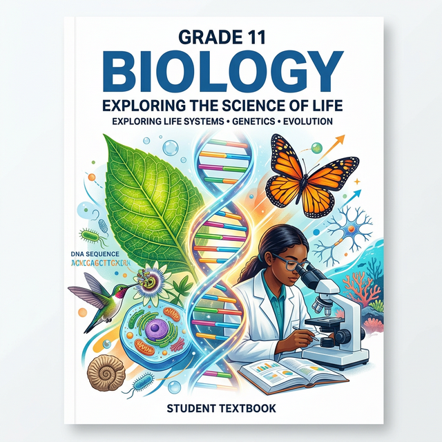
Welcome to Class 11 Biology!
Biology is the study of life in its entirety. The growth of biology as a natural science during the last 1000 years is interesting from many points of view. One feature of this growth is an emphasis on the underlying principles that are common to all living entities, plants, animals, and microbes alike.
This digital textbook spans the entire CBSE Class 11 Biology curriculum. It has been specifically designed to not only meet the academic standards required for the board exams but also to foster a deep, conceptual understanding of the living world.
How to Use This Book
This book is organized into five core units, comprising 19 individual chapters.
Each chapter features:
- Comprehensive Theory: Detailed, easy-to-understand explanations of complex biological processes.
- High-Quality Illustrations: Custom-designed, scientifically accurate diagrams to visualize anatomical structures and cellular pathways.
- Competency-Based Questions: At the end of every chapter, you will find three rigorously designed competency-based questions with mathematically and biologically justified step-by-step solutions hidden in expandable blocks. These are invaluable for exam preparation.
Core Units Covered:
- Diversity in the Living World: Chapters 1-4
- Structural Organisation in Plants and Animals: Chapters 5-7
- Cell: Structure and Functions: Chapters 8-10
- Plant Physiology: Chapters 11-12
- Human Physiology: Chapters 13-19
Prepare to embark on an incredible journey exploring the sheer diversity, structural organization, and intricate physiological mechanics of the living world!
This educational resource is tailored for the Central Board of Secondary Education (CBSE) Biology curriculum.
Chapter 1: The Living World
Biology is the story of life on earth. The living world is rich in variety. Millions of plants and animals have been identified and described, but a large number still remains unknown. The very range of organisms in terms of size, colour, habitat, physiological and morphological features makes us seek the defining characteristics of living organisms.
What is Living?
When we try to define ‘living’, we conventionally look for distinctive characteristics exhibited by living organisms. Growth, reproduction, ability to sense environment and mount a suitable response come to our mind immediately as unique features of living organisms. One can add a few more features like metabolism, ability to self-replicate, self-organise, interact and emergence to this list.
Biodiversity
Biodiversity refers to the number and types of organisms present on earth. The number of species that are known and described range between 1.7-1.8 million.
Need for Classification
It is nearly impossible to study all the living organisms. Hence, there is a need to devise some means to make this possible. This process is called classification. Classification is the process by which anything is grouped into convenient categories based on some easily observable characters.
Taxonomy and Systematics
Based on characteristics, all living organisms can be classified into different taxa. This process of classification is taxonomy.
The word systematics is derived from the Latin word ‘systema’ which means systematic arrangement of organisms. Linnaeus used Systema Naturae as the title of his publication. Systematics takes into account evolutionary relationships between organisms.
Three Domains of Life
The three-domain system is a biological classification introduced by Carl Woese in 1990. It divides cellular life forms into archaea, bacteria, and eukaryote domains.
Binomial Nomenclature
The system of providing a name with two components is called Binomial Nomenclature. This naming system given by Carolus Linnaeus is being practised by biologists all over the world. Each name has two components – the Generic name and the specific epithet. Example: The scientific name of mango is written as Mangifera indica. Here Mangifera represents the genus while indica, is a particular species, or a specific epithet.
Rules of Nomenclature:
- Biological names are generally in Latin and written in italics.
- The first word represents the genus while the second component denotes the specific epithet.
- Both the words, when handwritten, are separately underlined, or printed in italics to indicate their Latin origin.
- The first word denoting the genus starts with a capital letter while the specific epithet starts with a small letter.
Concept of Species and Taxonomical Hierarchy
Classification is not a single step process but involves a hierarchy of steps in which each step represents a rank or category. Since the category is a part of overall taxonomic arrangement, it is called the taxonomic category and all categories together constitute the taxonomic hierarchy.
Each category, referred to as a unit of classification, in fact, represents a rank and is commonly termed as taxon (pl.: taxa).
The taxonomic hierarchy:
- Kingdom
- Phylum (or Division for plants)
- Class
- Order
- Family
- Genus
- Species
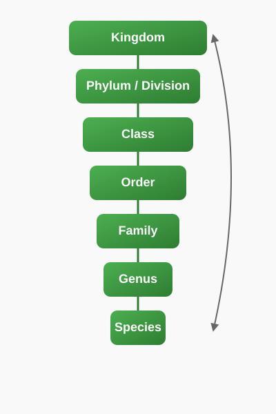
Figure 1.1: Taxonomic Hierarchy
Competency Based Questions (Previous Years & Sample Papers)
Q1. A student found a new organism in a tropical rainforest. The organism has a cell wall but lacks a true nucleus. Based on the three domains of life proposed by Carl Woese, under which domain should this organism be primarily investigated, and why?
Answer
The organism should be investigated under the domain Bacteria or Archaea.
Reasoning: Organisms lacking a true nucleus are prokaryotes. In Carl Woese's three-domain system, all prokaryotes are divided into two domains: Archaea and Bacteria. The domain Eukarya includes all eukaryotes (organisms with a true nucleus). The presence of the cell wall further confirms it is a prokaryote (though some eukaryotes also have cell walls, the lack of a nucleus is the defining prokaryotic feature here).
Q2. Evaluate the following mathematical expression that biologists might use when calculating a biodiversity index (like Simpson’s Diversity Index). Simplify the LaTeX equation:
$$ D = 1 - \sum \left( \frac{n_i}{N} \right)^2 $$
Given a population where type A has \(n_1 = 3\), type B has \(n_2 = 2\), and type C has \(n_3 = 5\). Total population \(N = 10\). Calculate the diversity index \(D\).
Answer
Let us apply the formula:
Step 1: Calculate the probability proportion $P_i = \frac{n_i}{N}$ for each species.
For Type A: $\frac{3}{10} = 0.3$
For Type B: $\frac{2}{10} = 0.2$
For Type C: $\frac{5}{10} = 0.5$
Step 2: Square each proportion:
$(0.3)^2 = 0.09$
$(0.2)^2 = 0.04$
$(0.5)^2 = 0.25$
Step 3: Sum the squared proportions:
$\sum \left( \frac{n_i}{N} \right)^2 = 0.09 + 0.04 + 0.25 = 0.38$
Step 4: Subtract from 1:
$D = 1 - 0.38 = 0.62$
The diversity index $D$ is $0.62$.
Q3. If the number of species in genus A and its related genus B are represented by \(x\) and \(y\) respectively, and their taxonomic relationship is given by the function \(f(x, y) = \frac{\sqrt{x^2 + y^2}}{x \cdot y}\), what happens as the number of species in both genera approaches infinity?
Answer
Let us evaluate the limit as $x \to \infty$ and $y \to \infty$:
$$ \lim_{{x,y \to \infty}} \frac{\sqrt{x^2 + y^2}}{x \cdot y} $$
We can rewrite the expression by bringing $x \cdot y$ inside the square root:
$$ \sqrt{ \frac{x^2 + y^2}{x^2 y^2} } = \sqrt{ \frac{x^2}{x^2 y^2} + \frac{y^2}{x^2 y^2} } = \sqrt{ \frac{1}{y^2} + \frac{1}{x^2} } $$
As $x$ and $y$ approach infinity, both $\frac{1}{x^2}$ and $\frac{1}{y^2}$ approach $0$.
Thus, the limit is $\sqrt{0 + 0} = 0$.
Biologically, this indicates that as the species diversity within individual genera becomes extremely large, the relative mathematical relation $f(x,y)$ between their combined variance and their cross-product diversity diminishes towards zero.
Chapter 2: Biological Classification
Since the dawn of civilisation, there have been many attempts to classify living organisms. It was done instinctively not using criteria that were scientific but borne out of a need to use organisms for our own use – for food, shelter and clothing. Aristotle was the earliest to attempt a more scientific basis for classification. He used simple morphological characters to classify plants into trees, shrubs and herbs. He also divided animals into two groups, those which had red blood and those that did not.
Five Kingdom Classification
In Linnaeus’ time a Two Kingdom system of classification with Plantae and Animalia kingdoms was developed that included all plants and animals respectively. This system did not distinguish between the eukaryotes and prokaryotes, unicellular and multicellular organisms and photosynthetic (green algae) and non-photosynthetic (fungi) organisms.
R.H. Whittaker (1969) proposed a Five Kingdom Classification. The kingdoms defined by him were named Monera, Protista, Fungi, Plantae and Animalia. The main criteria for classification used by him include cell structure, body organisation, mode of nutrition, reproduction and phylogenetic relationships.
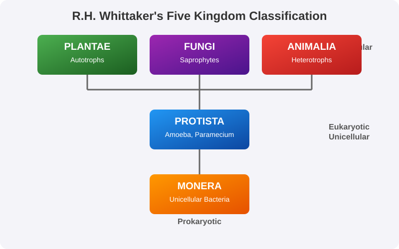
Figure 2.1: R.H. Whittaker's Five Kingdom Classification
Kingdom Monera
Bacteria are the sole members of the Kingdom Monera. They are the most abundant micro-organisms. Bacteria occur almost everywhere. Hundreds of bacteria are present in a handful of soil.
Bacteria are grouped under four categories based on their shape:
- the spherical Coccus (pl.: cocci)
- the rod-shaped Bacillus (pl.: bacilli)
- the comma-shaped Vibrium (pl.: vibrio)
- the spiral Spirillum (pl.: spirilla)
Archaebacteria
These bacteria are special since they live in some of the most harsh habitats such as extreme salty areas (halophiles), hot springs (thermoacidophiles) and marshy areas (methanogens).
Eubacteria
There are thousands of different eubacteria or ‘true bacteria’. They are characterised by the presence of a rigid cell wall, and if motile, a flagellum. The cyanobacteria (also referred to as blue-green algae) have chlorophyll a similar to green plants and are photosynthetic autotrophs.
Kingdom Protista
All single-celled eukaryotes are placed under Protista, but the boundaries of this kingdom are not well defined. What may be ‘a photosynthetic protistan’ to one biologist may be ‘a plant’ to another.
In this group we include:
- Chrysophytes: Includes diatoms and golden algae (desmids).
- Dinoflagellates: These organisms are mostly marine and photosynthetic.
- Euglenoids: Majority of them are fresh water organisms found in stagnant water.
- Slime Moulds: Saprophytic protists.
- Protozoans: All protozoans are heterotrophs and live as predators or parasites.
Kingdom Fungi
The fungi constitute a unique kingdom of heterotrophic organisms. They show a great diversity in morphology and habitat. When your bread develops a mould or your orange rots it is because of fungi.
Features:
- Most fungi are heterotrophic and absorb soluble organic matter from dead substrates and hence are called saprophytes.
- Those that depend on living plants and animals are called parasites.
- They can also live as symbionts – in association with algae as lichens and with roots of higher plants as mycorrhiza.
Viruses, Viroids, Prions and Lichens
In the five-kingdom classification of Whittaker there is no mention of lichens and some acellular organisms like viruses, viroids and prions.
- Viruses: The viruses are non-cellular organisms that are characterised by having an inert crystalline structure outside the living cell. Once they infect a cell they take over the machinery of the host cell to replicate themselves, killing the host.
- Viroids: In 1971, T.O. Diener discovered a new infectious agent that was smaller than viruses and caused potato spindle tuber disease. It was found to be a free RNA; it lacked the protein coat that is found in viruses.
- Prions: In modern medicine certain infectious neurological diseases were found to be transmitted by an agent consisting of abnormally folded protein. These agents are called prions.
- Lichens: Lichens are symbiotic associations i.e. mutually useful associations, between algae and fungi. The algal component is known as phycobiont and fungal component as mycobiont.
Competency Based Questions (Previous Years & Sample Papers)
Q1. Consider the growth of a bacterial population in a conducive environment. The growth can be modeled according to the exponential equation $N\sb{t} = N\sb{0} \cdot 2^n$, where $N\sb{t}$ is the final population, $N\sb{0}$ is the initial population, and $n$ is the number of generations. If a population of E. coli starts with 5 cells and divides every 20 minutes, what will be the population after 3 hours? Calculate the exact value.
Answer
First, let’s identify the given values: Initial population $N\sb{0} = 5$ Division time = 20 minutes Total time = 3 hours = 180 minutes
Step 1: Calculate the number of generations $n$. $n = \frac{180 \text{ minutes}}{20 \text{ minutes/generation}} = 9 \text{ generations}$
Step 2: Apply the exponential growth formula: $N\sb{t} = N\sb{0} \cdot 2^n$ $N\sb{t} = 5 \cdot 2^9$
Step 3: Calculate the power of 2: $2^9 = 512$
Step 4: Final calculation: $N\sb{t} = 5 \cdot 512 = 2560$
The population of E. coli after 3 hours will be 2560 cells.
Q2. During a laboratory experiment, a student isolates an organism that has a well-defined nucleus, is unicellular, and possesses cilia for locomotion. It also shows a contractile vacuole for osmoregulation. Based on R.H. Whittaker’s five-kingdom classification, to which kingdom does this organism belong, and why?
Answer
The organism belongs to Kingdom Protista.
Reasoning:
- Unicellular Eukaryote: The presence of a “well-defined nucleus” indicates that it is a eukaryote. The fact that it is “unicellular” fits perfectly within Kingdom Protista, which Whittaker defined as the kingdom for all single-celled eukaryotes.
- Cilia and Contractile Vacuole: These are characteristic features of ciliated protozoans (like Paramecium), which are a major group within Kingdom Protista.
- It cannot be Monera because it has a true nucleus (Monera members are prokaryotes). It cannot be Fungi, Plantae, or Animalia because those are typically multicellular kingdoms (with a few exceptions like yeast, but yeast do not have cilia or contractile vacuoles).
Q3. Viroids differ from viruses in a fundamental biochemical structural aspect. If the molecular weight of a viroid’s genetic material is $M\sb{v}$ and the molecular weight of a comparable virus is $M\sb{vir}$, the relationship is generally $M\sb{v} < M\sb{vir}$. Explain the biological basis for this inequality based on the composition of viroids.
Answer
The biological basis for the relationship $M\sb{v} < M\sb{vir}$ lies in the structural composition of the two infectious agents:
- Virus Composition: A typical virus consists of genetic material (either DNA or RNA) enclosed within a protein coat called a capsid. Therefore, the total molecular weight of a virus ($M\sb{vir}$) is the sum of the weights of its nucleic acid and its protein coat.
- Viroid Composition: Viroids, discovered by T.O. Diener, are composed solely of free, short strands of naked RNA. They completely lack the protein coat (capsid) that viruses have. Furthermore, the RNA of a viroid is of low molecular weight.
Because a viroid is essentially just a molecule of low-molecular-weight RNA without any associated proteins, its total molecular weight ($M\sb{v}$) will always be significantly less than that of a complete virus particle ($M\sb{vir}$).
Chapter 3: Plant Kingdom
In the previous chapter, we looked at the broad classification of living organisms under the system proposed by Whittaker (1969) wherein he suggested the Five Kingdom classification viz. Monera, Protista, Fungi, Animalia and Plantae. In this chapter, we will deal in detail with further classification within Kingdom Plantae popularly known as the ‘plant kingdom’.
We must stress here that our understanding of the plant kingdom has changed over time. Fungi, and members of the Monera and Protista having cell walls have now been excluded from Plantae though earlier classifications placed them in the same kingdom. The cyanobacteria that are also referred to as blue-green algae are not ‘algae’ any more. In this chapter, we will describe Algae, Bryophytes, Pteridophytes and Gymnosperms under Plantae.
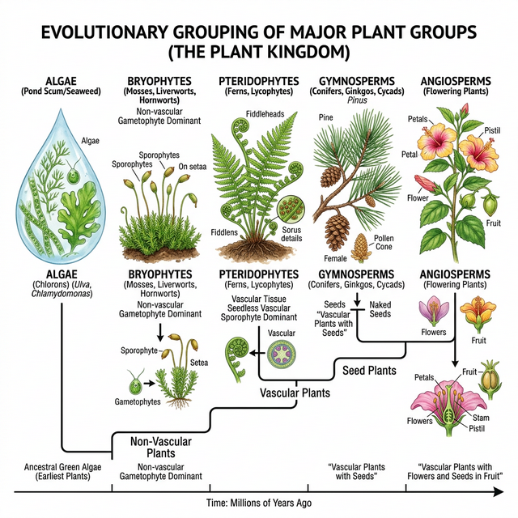
Figure 3.1: Evolutionary grouping of plants
Algae
Algae are chlorophyll-bearing, simple, thalloid, autotrophic and largely aquatic (both fresh water and marine) organisms. They occur in a variety of other habitats: moist stones, soils and wood. Some of them also occur in association with fungi (lichen) and animals (e.g., on sloth bear).
Classes of Algae
- Chlorophyceae (Green algae): The plant body may be unicellular, colonial or filamentous. They are usually grass green due to the dominance of pigments chlorophyll a and b.
- Phaeophyceae (Brown algae): Found primarily in marine habitats. They possess chlorophyll a, c, carotenoids and xanthophylls. They show great variation in size and form.
- Rhodophyceae (Red algae): The members of Rhodophyceae are commonly called red algae because of the predominance of the red pigment, r-phycoerythrin in their body.
Bryophytes
Bryophytes include the various mosses and liverworts that are found commonly growing in moist shaded areas in the hills. Bryophytes are also called amphibians of the plant kingdom because these plants can live in soil but are dependent on water for sexual reproduction. They usually occur in damp, humid and shaded localities.
- Liverworts: Grow usually in moist, shady habitats such as banks of streams, marshy ground, damp soil, bark of trees and deep in the woods.
- Mosses: The predominant stage of the life cycle of a moss is the gametophyte which consists of two stages: protonema and leafy stage. They play an important role in plant succession on bare rocks/soil.
Pteridophytes
The Pteridophytes include horsetails and ferns. Pteridophytes are used for medicinal purposes and as soil-binders. They are also frequently grown as ornamentals. Evolutionarily, they are the first terrestrial plants to possess vascular tissues — xylem and phloem.
The pteridophytes are found in cool, damp, shady places though some may flourish well in sandy-soil conditions. The main plant body is a sporophyte which is differentiated into true root, stem and leaves. The leaves in pteridophyta are small (microphylls) as in Selaginella or large (macrophylls) as in ferns.
Gymnosperms
The gymnosperms (gymnos : naked, sperma : seeds) are plants in which the ovules are not enclosed by any ovary wall and remain exposed, both before and after fertilisation. The seeds that develop post-fertilisation, are not covered, i.e., are naked. Gymnosperms include medium-sized trees or tall trees and shrubs.
One of the gymnosperms, the giant redwood tree Sequoia is one of the tallest tree species. The roots are generally tap roots. Roots in some genera have fungal association in the form of mycorrhiza (Pinus), while in some others (Cycas) small specialised roots called coralloid roots are associated with \text{N}_2- fixing cyanobacteria.
Competency Based Questions (Previous Years & Sample Papers)
Q1. A botanist discovers a new plant species in a damp, shaded forest. The plant is small and lacks true roots, stems, and leaves, but has root-like structures called rhizoids. It also requires a film of water for its sperm to swim to the egg for fertilization. Based on these characteristics, which major plant division does this species most likely belong to, and why? Estimate the ploidy level ($n$ or $2n$) of its main free-living plant body.
Answer
This plant species belongs to the Bryophytes.
Reasoning:
- Lack of true roots, stems, leaves: Unlike pteridophytes, gymnosperms, and angiosperms, bryophytes have a thallus-like body and lack true vascular tissues and organs. They possess root-like structures (rhizoids) instead.
- Water dependence for fertilization: Bryophytes are often called the “amphibians of the plant kingdom” specifically because their biflagellate sperm (antherozoids) require a layer of water to swim to the egg (archegonium) for fertilization.
- Habitat: They are typically found in damp, shaded environments, which aligns with the botanist’s discovery.
Ploidy Level: The main, free-living, photosynthetic plant body of a bryophyte is the gametophyte, which is haploid ($n$). The sporophyte ($2n$) is physically attached to and nutritionally dependent on the gametophyte.
Q2. During a field trip, a student observes two different vascular plants. Plant A has large leaves (fronds) that uncoil as they grow, and produces spores on the undersides of its leaves. Plant B is a large tree with needle-like leaves and bears its seeds in cones, not enclosed in any fruit. Identify the broad groups to which Plant A and Plant B belong. If the number of chromosomes in the endosperm of Plant B is $3x = 36$, what would be the expected mathematical relationship for the ploidy of its endosperm compared to an angiosperm? (Note: Angiosperm endosperm is typically 3n)
Answer
Identification:
- Plant A is a Pteridophyte (specifically a fern). It is a vascular plant that reproduces via spores (often in sori on the underside of macrophylls/fronds) rather than seeds.
- Plant B is a Gymnosperm (like a pine tree). It is a vascular plant that produces “naked” seeds in cones, without a fruit or ovary wall.
Ploidy Relationship: The prompt contains a trick. While the question mentions $3x = 36$ as a hypothetical, in reality, the endosperm of a Gymnosperm is formed before fertilization and represents the female gametophyte tissue. Therefore, the ploidy of a gymnosperm’s endosperm is strictly haploid ($n$).
Assuming the prompt implies comparing an actual gymnosperm to an angiosperm:
- Gymnosperm endosperm = $n$
- Angiosperm endosperm = $3n$ (due to double fertilization)
The mathematical relationship is that the ploidy of the gymnosperm endosperm is one-third ($\frac{1}{3}$) that of an angiosperm endosperm. If the problem explicitly dictates an artificial scenario where Plant B has $3x=36$, it contradicts biological reality for gymnosperms, but mathematically $x = 12$. However, biologically, the gymnosperm tissue is $n$.
Q3. Calculate the surface area to volume ratio ($SA/V$) for a spherical unicellular green alga with a radius $r = 10 \mu m$ and a filamentous green alga modeled as a cylinder of the same radius $r = 10 \mu m$ but length $h = 100 \mu m$. The formulas are: $SA_{sphere} = 4\pi r^2$, $V_{sphere} = \frac{4}{3}\pi r^3$, $SA_{cylinder} = 2\pi r^2 + 2\pi rh$, $V_{cylinder} = \pi r^2 h$. Which shape is more efficient for nutrient absorption from the surrounding water?
Answer
Let’s calculate the ratios for both algae.
For the spherical alga: $SA_{sphere} = 4 \cdot \pi \cdot (10)^2 = 400\pi \mu m^2$ $V_{sphere} = \frac{4}{3} \cdot \pi \cdot (10)^3 = \frac{4000\pi}{3} \mu m^3$
Ratio for sphere: $$ \frac{SA}{V}_{sphere} = \frac{400\pi}{\frac{4000\pi}{3}} = \frac{400 \cdot 3}{4000} = \frac{1200}{4000} = 0.3 \mu m^{-1} $$
For the filamentous (cylindrical) alga: $SA_{cylinder} = 2\pi(10)^2 + 2\pi(10)(100) = 200\pi + 2000\pi = 2200\pi \mu m^2$ $V_{cylinder} = \pi(10)^2(100) = 10000\pi \mu m^3$
Ratio for cylinder: $$ \frac{SA}{V}_{cylinder} = \frac{2200\pi}{10000\pi} = 0.22 \mu m^{-1} $$
Conclusion: Comparing the two ratios ($0.3 > 0.22$), the spherical alga has a higher Surface Area to Volume ratio. Therefore, the spherical shape is more efficient for passive nutrient absorption from the surrounding water per unit of internal volume compared to the thick filament modeled here.
Chapter 4: Animal Kingdom
When you look around, you will observe different animals with different structures and forms. As over a million species of animals have been described till now, the need for classification becomes all the more important. The classification also helps in assigning a systematic position to newly described species.
Basis of Classification
Inspite of differences in structure and form of different animals, there are fundamental features common to various individuals in relation to the arrangement of cells, body symmetry, nature of coelom, patterns of digestive, circulatory or reproductive systems. These features are used as the basis of animal classification.
- Levels of Organisation: Cellular (Porifera), Tissue (Coelenterata, Ctenophora), Organ, and Organ system.
- Symmetry: Asymmetrical, Radial, and Bilateral symmetry.
- Diploblastic and Triploblastic Organisation: Animals with two embryonic layers (ectoderm and endoderm) are diploblastic. Those with three (including mesoderm) are triploblastic.
- Coelom: The presence or absence of a cavity between the body wall and the gut wall is very important in classification.
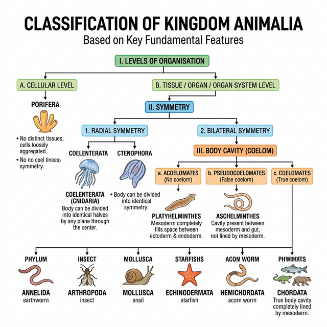
Figure 4.1: Broad classification of Kingdom Animalia based on common fundamental features
Classification of Animals
The broad classification of Animalia based on common fundamental features:
Non-Chordates
- Phylum Porifera: Sponges; cellular level of organisation; asymmetrical. Have a water transport or canal system.
- Phylum Coelenterata (Cnidaria): Aquatic, mostly marine; have cnidoblasts for defense and prey capture; radial symmetry. Examples: Hydra, Aurelia.
- Phylum Ctenophora: Commonly known as sea walnuts or comb jellies; exclusively marine; have 8 external rows of ciliated comb plates. Bioluminescence is well-marked.
- Phylum Platyhelminthes: Flatworms; dorso-ventrally flattened body; bilateral symmetry, triploblastic, acoelomate animals with organ level of organisation. Many are endoparasites.
- Phylum Aschelminthes: Roundworms; the body is circular in cross-section; pseudocoelomate animals.
- Phylum Annelida: Aquatic or terrestrial; their body surface is distinctly marked out into segments or metameres (e.g., Earthworm).
- Phylum Arthropoda: The largest phylum of Animalia which includes insects. They have jointed appendages. The body is covered by a chitinous exoskeleton.
- Phylum Mollusca: The second largest phylum. They have a soft body usually covered by a calcareous shell and an unsegmented body with a distinct head, muscular foot and visceral hump.
- Phylum Echinodermata: Animals with an endoskeleton of calcareous ossicles; adults have radial symmetry but larvae are bilaterally symmetrical. Have a unique water vascular system. Example: Starfish.
- Phylum Hemichordata: Small group of worm-like marine animals. They have a rudimentary structure in the collar region called stomochord, a structure similar to notochord.
Phylum Chordata
Animals belonging to phylum Chordata are fundamentally characterised by the presence of a notochord, a dorsal hollow nerve cord and paired pharyngeal gill slits.
Phylum Chordata is divided into three subphyla: Urochordata or Tunicata, Cephalochordata and Vertebrata.
Subphylum Vertebrata is further divided as follows:
- Agnatha (lacks jaw):
- Class Cyclostomata: Ectoparasites on some fishes; circular mouth without jaws.
- Gnathostomata (bears jaw):
- Super Class Pisces (bear fins):
- Class Chondrichthyes: Cartilaginous fishes (e.g., Sharks).
- Class Osteichthyes: Bony fishes (e.g., Rohu, Seahorse).
- Super Class Tetrapoda (bear limbs):
- Class Amphibia: Can live in aquatic as well as terrestrial habitats.
- Class Reptilia: Creeping or crawling mode of locomotion; dry and cornified skin.
- Class Aves: Birds; presence of feathers and most of them can fly except flightless birds. Forelimbs modified into wings.
- Class Mammalia: Have mammary glands (milk producing glands) to nourish young ones. They have hair on the skin.
- Super Class Pisces (bear fins):
Competency Based Questions (Previous Years & Sample Papers)
Q1. An entomologist collects an unknown animal from the soil. Upon dissection, she finds that it has a bilateral symmetry, a true coelom lined by mesoderm, an open circulatory system, and its body is divided into a head, thorax, and abdomen with jointed appendages. Using the classification system, to which Phylum does this organism belong? Name the specific carbohydrate polymer that likely coats the exterior forming its exoskeleton.
Answer
The organism belongs to Phylum Arthropoda.
Reasoning: While many phyla have bilateral symmetry and a true coelom (such as Annelida and Mollusca), the defining combination here is the jointed appendages and the specific body segmentation into head, thorax, and abdomen, along with an open circulatory system. These are classic, defining hallmarks of arthropods (specifically resembling insects/hexapods).
The specific carbohydrate polymer that forms its exoskeleton is Chitin. Chitin is a rigid, structural polysaccharide found extensively in the exoskeletons of arthropods.
Q2. The transition from an aquatic to a terrestrial lifestyle required several major adaptations in vertebrates. A key adaptation seen in Class Reptilia, Aves, and Mammalia but absent in Class Amphibia is the development of the amniotic egg. If a wildlife biologist observes an unknown vertebrate laying eggs in a dry, sandy environment, and the eggs have a leathery, calcium-based shell, list two Classes to which this animal most likely belongs. Why would an amphibian fail to reproduce in this exact spot?
Answer
The animal most likely belongs to either Class Reptilia or Class Aves.
Reasoning: Both reptiles and birds are amniotes capable of laying shelled eggs in dry, terrestrial environments. The leathery, calcium-based shell prevents desiccation (drying out) while allowing gas exchange.
Why an amphibian would fail: Amphibians (like frogs and salamanders) are not amniotes. They produce eggs without a protective, hard or leathery shell and lack the specialized extraembryonic membranes (like the amnion and chorion). Consequently, amphibian eggs are highly susceptible to desiccation. They must be laid in water or extremely moist environments. If an amphibian were to lay eggs in a dry, sandy environment, the eggs would quickly dry out and perish.
Q3. Consider the allometric scaling of metabolic rate in mammals, which frequently follows Kleiber’s Law: $B \propto M^{3/4}$, where $B$ is the basal metabolic rate and $M$ is the body mass. A biologist compares two mammals: a mouse (mass $m$) and a human (mass $M = 10000m$). Calculate the ratio of the human’s metabolic rate to the mouse’s metabolic rate ($B_{human}/B_{mouse}$). Despite the human being 10,000 times heavier, explain why the ratio is not exactly 10,000.
Answer
Let’s calculate the ratio using Kleiber’s Law: $B = k \cdot M^{3/4}$
For the mouse: $B_{mouse} = k \cdot m^{3/4}$ For the human: $B_{human} = k \cdot (10000m)^{3/4}$
Ratio: $$ \frac{B_{human}}{B_{mouse}} = \frac{k \cdot (10000m)^{3/4}}{k \cdot m^{3/4}} = (10000)^{3/4} $$
To solve $(10000)^{3/4}$: $$ (10000)^{3/4} = (10^4)^{3/4} = 10^{4 \cdot \frac{3}{4}} = 10^3 = 1000 $$
So, the ratio $\frac{B_{human}}{B_{mouse}}$ is $1000$.
Biological Explanation: Even though the human is 10,000 times heavier, their metabolic rate is only 1,000 times greater. The ratio is not 10,000 (which would be a linear 1:1 scaling) because metabolic rate scales allometrically (specifically to the 3/4 power), not isometrically, with mass.
A larger mammal has a relatively smaller surface area-to-volume ratio than a small mammal. Since heat is lost across the body surface, the smaller mammal loses heat much faster relative to its mass and must maintain a significantly higher metabolic rate per gram of tissue to maintain its body temperature (assuming they are both endotherms/Mammalia). Thus, mass-specific metabolic rate decreases as structural size increases.
Chapter 5: Morphology of Flowering Plants
Morphology is the study of the external structure of an organism. The wide range in the structure of higher plants will never fail to fascinate us. Even though the angiosperms show such a large diversity in external structure or morphology, they are all characterised by presence of roots, stems, leaves, flowers and fruits.
In this chapter, we will learn about the possible variations in different parts, found as adaptations of the plants to their environment, e.g., adaptations to various habitats, for protection, climbing, storage, etc.
The Root
In majority of the dicotyledonous plants, the direct elongation of the radicle leads to the formation of primary root which grows inside the soil. It bears lateral roots of several orders that are referred to as secondary, tertiary, etc., roots.
- Tap root system: The primary root and its branches constitute the tap root system, as seen in the mustard plant.
- Fibrous root system: In monocotyledonous plants, the primary root is short-lived and is replaced by a large number of roots originating from the base of the stem. Example: Wheat.
- Adventitious roots: Roots arising from parts of the plant other than the radicle are called adventitious roots (e.g., grass, Monstera and banyan tree).
Regions of the root include the root cap, region of meristematic activity, region of elongation, and region of maturation (with root hairs). Modifications of roots include storage roots (carrot, turnip, sweet potato), prop roots (banyan), stilt roots (maize, sugarcane), and pneumatophores (Rhizophora) for respiration.
The Stem
The stem is the ascending part of the axis bearing branches, leaves, flowers and fruits. It develops from the plumule of the embryo of a germinating seed. The stem bears nodes and internodes.
Stems can be modified to perform different functions:
- Storage: Underground stems of potato, ginger, turmeric.
- Tendrils: Developed from axillary buds, they are slender and spirally coiled to help plants climb (e.g., gourds, grapevines).
- Thorns: Woody, straight and pointed structures protecting plants from browsing animals (e.g., Citrus, Bougainvillea).
The Leaf
The leaf is a lateral, generally flattened structure borne on the stem. It develops at the node and bears a bud in its axil. Leaves originate from shoot apical meristems and are arranged in an acropetal order. They are the most important vegetative organs for photosynthesis.
- Venation: The arrangement of veins and the veinlets in the lamina of leaf is termed as venation (Reticulate in dicots, Parallel in monocots).
- Phyllotaxy: The pattern of arrangement of leaves on the stem or branch (Alternate, Opposite, Whorled).
The Inflorescence
A flower is a modified shoot wherein the shoot apical meristem changes to floral meristem. The arrangement of flowers on the floral axis is termed as inflorescence.
- Racemose: The main axis continues to grow, the flowers are borne laterally in an acropetal succession.
- Cymose: The main axis terminates in a flower, hence is limited in growth. The flowers are borne in a basipetal order.
The Flower
The flower is the reproductive unit in the angiosperms. It is meant for sexual reproduction. A typical flower has four different kinds of whorls arranged successively on the swollen end of the stalk or pedicel, called thalamus or receptacle. These are calyx, corolla, androecium and gynoecium.
Based on the position of calyx, corolla and androecium in respect of the ovary on thalamus, the flowers are described as:
- Hypogynous: Ovary is superior (e.g., mustard).
- Perigynous: Ovary is half inferior (e.g., plum, rose).
- Epigynous: Ovary is inferior (e.g., guava, cucumber).
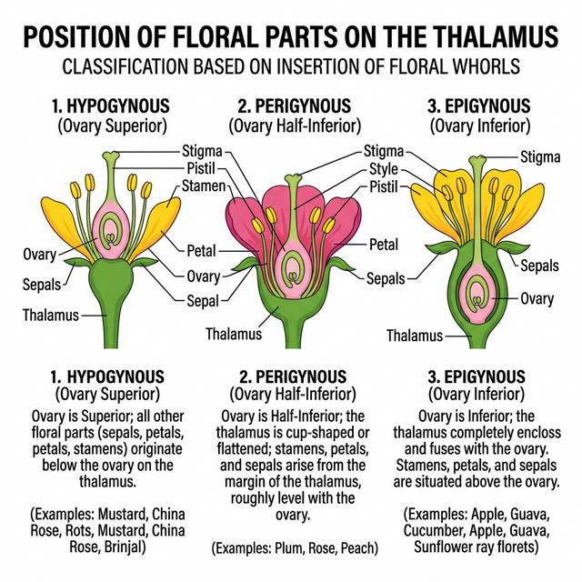
Figure 5.1: Position of floral parts on thalamus
Fruit and Seed
The fruit is a characteristic feature of the flowering plants. It is a mature or ripened ovary, developed after fertilisation. If a fruit is formed without fertilisation of the ovary, it is called a parthenocarpic fruit.
After fertilisation, ovules develop into seeds. A seed is made up of a seed coat and an embryo. The embryo is made up of a radicle, an embryonal axis and one (as in wheat, maize) or two cotyledons (as in gram and pea).
Competency Based Questions (Previous Years & Sample Papers)
Q1. Suppose the initial number of dividing cells in the meristematic region of a growing root is $N_0$. These cells undergo arithmetic growth, where only one daughter cell continues to divide while the other differentiates. If the rate of cell division adds $r$ new differentiating cells per day, express the total number of cells $N_t$ after $t$ days as a mathematical equation. If $N_0 = 100$ and $r = 50$ cells/day, what is the total number of cells after 10 days? Does this equation represent linear or exponential growth?
Answer
Mathematical Equation: In arithmetic growth, only one daughter cell retains the capacity to divide, resulting in a constant rate of growth ($r$). The total number of cells ($N_t$) after time $t$ will be the initial dividing cells plus the total number of differentiated cells added over time. The equation is: $N_t = N_0 + rt$
Calculation: Given: $N_0 = 100$ $r = 50$ $t = 10$
Substitute the values into the equation: $N_t = 100 + (50 \cdot 10)$ $N_t = 100 + 500$ $N_t = 600$
The total number of cells after 10 days is 600 cells.
Growth Type: This equation ($y = mx + c$) represents linear growth. A plot of $N_t$ versus $t$ will yield a straight line.
Q2. During a biology examination, a student is given a flower with a superior ovary and five petals. The petals show vexillary aestivation. Furthermore, the androecium is diadelphous (i.e., stamens are united into two bundles, usually $9+1$). Based on the syllabic structural constraints, identify the family to which this flower belongs. Is the fruit likely to be a berry or a legume?
Answer
Family Identification: The flower belongs to the family Leguminosae (or Fabaceae). The key identifying characteristics of this family provided in the prompt are:
- Vexillary Aestivation: This is characteristic of the papilionaceous corolla (with a standard, two wings, and two fused keel petals) typical of the Faboideae subfamily.
- Diadelphous Androecium ($9+1$): This is a hallmark feature of many members of Leguminosae.
Fruit Type: Given the family is Leguminosae, the fruit is practically always a legume (or pod), which develops from a monocarpellary, superior ovary and dehisces along both dorsal and ventral sutures. It is not a berry.
Q3. Calculate the percentage change in the surface area of a strictly spherical grape (a type of berry) if its radius $R$ expands due to water absorption by $20%$. (Use the formula for the surface area of a sphere: $SA = 4\pi R^2$). Explain the physical significance of this relative increase for the fruit’s epidermis.
Answer
Let the initial radius be $R_1 = R$. Initial Surface Area ($SA_1$) = $4\pi R^2$
The radius expands by $20%$, so the new radius is: $R_2 = R + 0.20R = 1.20R$
New Surface Area ($SA_2$): $SA_2 = 4\pi (1.20R)^2$ $SA_2 = 4\pi (1.44R^2)$ $SA_2 = 1.44 \cdot (4\pi R^2) = 1.44 \cdot SA_1$
Percentage Change: $$ % \text{ Change} = \frac{SA_2 - SA_1}{SA_1} \cdot 100 $$ $$ % \text{ Change} = \frac{1.44 \cdot SA_1 - 1.00 \cdot SA_1}{SA_1} \cdot 100 $$ $$ % \text{ Change} = 0.44 \cdot 100 = 44% $$
The surface area increases by 44%.
Physical Significance: The epidermis (outer skin) of the fruit must stretch to accommodate this $44%$ increase in surface area. If the rate of water absorption is too rapid and the epidermal cells lack sufficient elasticity or capability for rapid division, the turgor pressure from the expanding internal volume will cause the epidermis to rupture resulting in fruit cracking or splitting, a common agricultural problem in cherries, grapes, and tomatoes after heavy rainfall.
Chapter 6: Anatomy of Flowering Plants
You can very easily see the structural similarities and variations in the external morphology of the larger living organism, both plants and animals. Similarly, if we were to study the internal structure, one also finds several similarities as well as differences. This chapter introduces you to the internal structure and functional organisation of higher plants. Study of internal structure of plants is called anatomy.
The Tissues
A tissue is a group of cells having a common origin and usually performing a common function. A plant is made up of different kinds of tissues. Tissues are classified into two main groups, namely, meristematic and permanent tissues based on whether the cells being formed are capable of dividing or not.
Meristematic Tissues
Growth in plants is largely restricted to specialised regions of active cell division called meristems.
- Apical Meristems: Occur at the tips of roots and shoots and produce primary tissues.
- Intercalary Meristems: Occur between mature tissues (e.g., in grasses).
- Lateral Meristems: Cylindrical meristems that occur in the mature regions of roots and shoots. They are responsible for secondary growth (e.g., fascicular vascular cambium, cork cambium).
Permanent Tissues
The cells of the permanent tissues do not generally divide further. Permanent tissues having all cells similar in structure and function are called simple tissues. Permanent tissues having many different types of cells are called complex tissues.
- Simple Tissues: Parenchyma, Collenchyma, Sclerenchyma.
- Complex Tissues:
- Xylem: Functions as a conducting tissue for water and minerals from roots to the stem and leaves. Composed of tracheids, vessels, xylem fibres and xylem parenchyma.
- Phloem: Transports food materials, usually from leaves to other parts of the plant. Composed of sieve tube elements, companion cells, phloem parenchyma and phloem fibres.
The Tissue System
We can classify the tissue systems into three types on the basis of their structure and location:
- Epidermal Tissue System: Includes the epidermis, stomata, and epidermal appendages (trichomes and hairs).
- Ground Tissue System: All tissues except epidermis and vascular bundles constitute the ground tissue. It consists of simple tissues such as parenchyma, collenchyma and sclerenchyma.
- Vascular Tissue System: Consists of complex tissues, the phloem and the xylem. The xylem and phloem forms together constitute vascular bundles.

Figure 6.1: Different types of vascular bundles
Anatomy of Dicotyledonous and Monocotyledonous Plants
For a better understanding of tissue organisation of roots, stems and leaves, it is convenient to study the transverse sections of the mature zones of these organs.
- Dicot Root vs Monocot Root: Dicot roots have fewer xylem bundles (usually 2-6) and a very small or inconspicuous pith. Monocot roots usually have polyarch xylem (>6 bundles) and a large, well-developed pith.
- Dicot Stem vs Monocot Stem: Dicot stems have vascular bundles arranged in a ring, which are ‘open’ (cambium present). Monocot stems have scattered vascular bundles, which are ‘closed’ (cambium absent) and surrounded by a sclerenchymatous bundle sheath.
- Dorsiventral (Dicot) Leaf vs Isobilateral (Monocot) Leaf: Dicot leaves have differentiated mesophyll (palisade and spongy) and stomata primarily on the lower epidermis. Monocot leaves have undifferentiated mesophyll and stomata on both surfaces. Monocots also have large, empty bulliform cells on the upper epidermis.
Competency Based Questions (Previous Years & Sample Papers)
Q1. The flow of water through the xylem vessels is described by the Hagen-Poiseuille equation for fluid dynamics in a pipe: $J_v = \frac{\pi r^4}{8\eta \Delta x} \Delta P$, where $J_v$ is the volumetric flow rate, $r$ is the radius of the vessel, $\eta$ is fluid viscosity, $\Delta P$ is the pressure difference, and $\Delta x$ is the distance. If a genetic mutation causes a plant’s xylem vessels to develop with a radius that is exactly half ($1/2$) of the normal radius $r$, by what factor will the volumetric flow rate $J_v$ decrease, assuming all other variables remain constant? Justify your mathematical output biologically.
Answer
Let the original flow rate be $J_1$: $$ J_1 = C \cdot r^4 $$ (where $C = \frac{\pi \Delta P}{8 \eta \Delta x}$ is a constant)
The new radius is $r_2 = \frac{1}{2}r$. The new flow rate $J_2$ is: $$ J_2 = C \cdot \left(\frac{1}{2}r\right)^4 $$ $$ J_2 = C \cdot \left(\frac{1}{16}r^4\right) $$ $$ J_2 = \frac{1}{16} \cdot (C \cdot r^4) $$ $$ J_2 = \frac{1}{16} J_1 $$
The volumetric flow rate decreases by a factor of 16.
Biological Justification: The Hagen-Poiseuille equation shows that flow rate is proportional to the fourth power of the radius. Biologically, this means that the width of the conducting elements (xylem vessels and tracheids) is the single most critical factor in a plant’s ability to transport water. Even a slight reduction in vessel diameter drastically restricts water flow due to increased friction against the vessel walls. This is why plants in dry environments (where cavitation and air embolisms are risks) often evolve narrower, but safer, tracheary elements, trading high flow capacity for structural integrity under high negative pressure.
Q2. During a microscopy lab, an anatomy student observes a transverse section (T.S.) of a young dicot stem. She counts 8 vascular bundles arranged in a regular ring. An hour later, she observes a T.S. of a monocot stem of similar age and notes 45 randomly scattered vascular bundles. Based on your knowledge of plant tissue systems, explain why the arrangement of vascular tissues inherently prevents secondary growth in the monocot stem, regardless of the number of bundles present.
Answer
The inability of monocot stems to undergo significant secondary growth is fundamentally due to the nature and arrangement of their vascular bundles.
- “Closed” Vascular Bundles: In monocots, the vascular bundles are described as ‘closed’, meaning they lack fascicular vascular cambium (a lateral meristem) between the xylem and phloem. The cambium is required to generate secondary xylem (wood) and secondary phloem.
- Scattered Arrangement: The scattered distribution of the bundles in the ground tissue prevents the formation of a continuous, functional ring of cambium (interfascicular cambium). In dicotyedons, the ring arrangement of ‘open’ bundles allows the fascicular cambial strips to join with interfascicular cambium to form a complete, continuous ring capable of dividing laterally to increase girth.
Therefore, because monocot bundles lack their own cambium and are geometrically isolated, they cannot produce secondary lateral tissues.
Q3. Bulliform cells are modified epidermal cells in grasses that control leaf rolling during water stress. Suppose a grass leaf maintains a turgor pressure $P_t = 0.8 MPa$ well above its threshold $P_{thresh} = 0.3 MPa$, keeping the leaf completely unrolled. When the soil moisture drastically drops, the bulliform cells lose water and their pressure drops according to $P_t = 0.8 - 0.05h$ (where $h$ is hours without water). Calculate the threshold time in hours ($h$) before the leaf begins to roll inwards to conserve water.
Answer
The leaf will begin to roll inwards when its turgor pressure $P_t$ drops to the threshold pressure $P_{thresh}$.
Given: $P_t = 0.8 - 0.05h$ $P_{thresh} = 0.3$
Set $P_t$ equal to $P_{thresh}$ to find the threshold time: $0.8 - 0.05h = 0.3$
Subtract 0.8 from both sides: $-0.05h = 0.3 - 0.8$ $-0.05h = -0.5$
Divide by -0.05: $h = \frac{-0.5}{-0.05}$ $h = \frac{50}{5}$ $h = 10$
The threshold time is 10 hours. After 10 hours of water deprivation, the bulliform cells become flaccid, causing the leaf to roll and minimize its exposed surface area to limit transpirational water loss.
Chapter 7: Structural Organisation in Animals
In the preceding chapters you came across a large variety of organisms, both unicellular and multicellular, of the animal kingdom. In unicellular organisms, all functions like digestion, respiration and reproduction are performed by a single cell. In the complex body of multicellular animals the same basic functions are carried out by different groups of cells in a well organised manner.
A group of similar cells along with intercellular substances perform a specific function. Such an organisation is called tissue. You may be surprised to know that all complex animals consist of only four basic types of tissues.
Animal Tissues
The structure of the cells vary according to their function. Therefore, the tissues are different and are broadly classified into four types:
- Epithelial Tissue
- Connective Tissue
- Muscular Tissue
- Neural Tissue
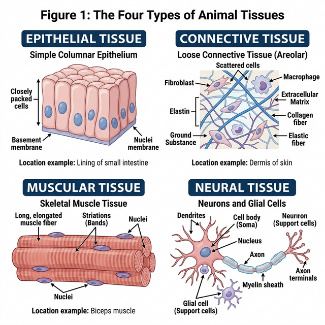
Figure 7.1: The four basic types of animal tissues
Epithelial Tissue
We commonly refer to an epithelial tissue as epithelium (pl.: epithelia). This tissue has a free surface, which faces either a body fluid or the outside environment and thus provides a covering or a lining for some part of the body.
- Simple epithelium is composed of a single layer of cells and functions as a lining for body cavities, ducts, and tubes.
- Compound epithelium consists of two or more cell layers and has protective function as it does in our skin.
Connective Tissue
Connective tissues are most abundant and widely distributed in the body of complex animals. They are named connective tissues because of their special function of linking and supporting other tissues/organs of the body. They range from soft connective tissues to specialised types, which include cartilage, bone, adipose, and blood. In all connective tissues except blood, the cells secrete fibres of structural proteins called collagen or elastin.
Muscular Tissue
Each muscle is made of many long, cylindrical fibres arranged in parallel arrays. These fibres are composed of numerous fine fibrils, called myofibrils. Muscle fibres contract (shorten) in response to stimulation, then relax (lengthen) and return to their uncontracted state in a coordinated fashion. Muscular tissue is of three types: skeletal, smooth, and cardiac.
Neural Tissue
Neural tissue exerts the greatest control over the body’s responsiveness to changing conditions. Neurons, the unit of neural system are excitable cells. The neuroglial cell which constitute the rest of the neural system protect and support neurons.
Morphology and Anatomy of Frog
Frogs are amphibians; they can live both on land and in freshwater. The most common species of frog found in India is Rana tigrina. They do not have constant body temperature; their body temperature varies with the temperature of the environment (poikilotherms or cold-blooded).
- Morphology: The frog body is divisible into head and trunk. A neck and tail are absent. The skin is smooth and slippery due to the presence of mucus.
- Digestive System: Consists of alimentary canal and digestive glands. The alimentary canal is short because frogs are carnivores and hence the length of intestine is reduced.
- Respiratory System: Frogs respire on land and in the water by two different methods. In water, skin acts as aquatic respiratory organ (cutaneous respiration). On land, the buccal cavity, skin and lungs act as the respiratory organs.
- Circulatory System: Frogs have a closed type circulatory system. They have a lymphatic system also. The heart is a muscular structure situated in the upper part of the body cavity. It has three chambers, two atria and one ventricle.
Competency Based Questions (Previous Years & Sample Papers)
Q1. An athlete sprains their ankle running on uneven terrain. The doctor diagnoses a tear in a specific dense regular connective tissue that connects muscle to bone. What is the name of this specific tissue? If the tensile strength $T$ of this tissue scales with its cross-sectional area $A$ such that $T = kA$, and the healing process initially deposits unorganized scar tissue with half the strength constant ($k_{scar} = k/2$), what must the relative area of the scar tissue ($A_{scar}/A$) be to temporarily restore the original tensile strength?
Answer
Tissue Identification: The specific dense regular connective tissue that connects skeletal muscle to bone is a tendon. (Ligaments connect bone to bone).
Mathematical Calculation: Original tensile strength: $T = kA$ New tensile strength with scar tissue: $T_{new} = k_{scar} \cdot A_{scar}$
To restore the original strength, set $T_{new}$ equal to $T$: $k_{scar} \cdot A_{scar} = kA$
Substitute the given value $k_{scar} = k/2$: $\left(\frac{k}{2}\right) \cdot A_{scar} = kA$
Divide both sides by $k$: $\frac{1}{2} A_{scar} = A$
Multiply by 2: $A_{scar} = 2A$
Therefore, the relative area of the scar tissue must be: $$ \frac{A_{scar}}{A} = 2 $$
This means the healing body must deposit twice as much cross-sectional area of unorganized scar tissue to temporarily equal the strength of the original, highly organized tendon tissue.
Q2. During a dissection of a frog (Rana tigrina), a biology student notices that the ventricle of the heart does not have a complete physical septum dividing the left and right sides. Consequently, oxygenated blood from the left atrium and deoxygenated blood from the right atrium mix before being pumped to the body. Given a scenario where the oxygen saturation of blood entering the left atrium is $96%$ and the entering the right atrium is $40%$, calculate the theoretical average oxygen saturation of the mixed blood entering the systemic circulation if the stroke volume contributions from both atria are mathematically equal ($1:1$).
Answer
If the stroke volume contributions from both atria are mathematically equal (a $1:1$ ratio), the resulting oxygen saturation of the mixed blood in the single ventricle will be the arithmetic mean of the two incoming saturations.
Oxygen saturation from left atrium ($S_{LA}$) = $96%$ Oxygen saturation from right atrium ($S_{RA}$) = $40%$
Theoretical mixed saturation ($S_{mixed}$): $$ S_{mixed} = \frac{S_{LA} + S_{RA}}{2} $$ $$ S_{mixed} = \frac{96% + 40%}{2} $$ $$ S_{mixed} = \frac{136%}{2} $$ $$ S_{mixed} = 68% $$
The theoretical average oxygen saturation of the mixed blood entering the systemic circulation would be $68%$. Note: Biologically, the frog heart has specialized structures like the spiral valve in the conus arteriosus that help reduce complete mixing, directing more oxygenated blood to the brain, but mathematically in a perfect mixing scenario, it is $68%$.
Q3. Epithelial tissues are classified based on the number of cell layers and the shape of the cells. Compare simple squamous epithelium with stratified squamous epithelium. Why would the inner lining of the human cheek be composed of stratified squamous epithelium instead of simple squamous epithelium?
Answer
Comparison:
- Simple squamous epithelium: Consists of a single layer of flat, tile-like cells resting on a basement membrane. Because it is extremely thin, its primary biological function is to facilitate rapid diffusion, filtration, or exchange of substances (e.g., in the alveoli of lungs, lining of blood vessels).
- Stratified squamous epithelium: Consists of multiple layers of cells, with the outermost layers being flat (squamous). Its primary biological function is protection against mechanical and chemical stress, friction, and abrasion.
Application to the inner cheek: The inner lining of the human cheek (buccal cavity) is subjected to constant mechanical friction from food processing (chewing, swallowing) and abrasion from teeth and tongue. If it were lined by simple squamous epithelium, the single delicate layer of cells would be easily torn away, exposing underlying connective tissue and capillaries, leading to bleeding and infection. Therefore, it is lined by stratified squamous epithelium; as the outermost layers of cells are sloughed off by friction, new cells generated by the basal layer constantly replace them, providing a durable protective barrier.
Chapter 8: Cell: The Unit of Life
When you look around, you see both living and non-living things. You must have wondered and asked yourself – ‘what is it that makes an organism living, or what is it that an inanimate thing does not have which a living thing has’ ? The answer to this is the presence of the basic unit of life – the cell in all living organisms.
All organisms are composed of cells. Some are composed of a single cell and are called unicellular organisms while others, like us, composed of many cells, are called multicellular organisms.
Cell Theory
In 1838, Matthias Schleiden, a German botanist, examined a large number of plants and observed that all plants are composed of different kinds of cells which form the tissues of the plant. At about the same time, Theodore Schwann (1839), a British Zoologist, studied different types of animal cells and reported that cells had a thin outer layer which is today known as the ‘plasma membrane’.
Schleiden and Schwann together formulated the cell theory. This theory however, did not explain as to how new cells were formed. Rudolf Virchow (1855) first explained that cells divided and new cells are formed from pre-existing cells (Omnis cellula-e cellula).
The cell theory as understood today is:
- All living organisms are composed of cells and products of cells.
- All cells arise from pre-existing cells.

Figure 8.1: Structural comparison of Plant and Animal Cells
Prokaryotic Cells
The prokaryotic cells are represented by bacteria, blue-green algae, mycoplasma and PPLO. They are generally smaller and multiply more rapidly than the eukaryotic cells. They may vary greatly in shape and size. The four basic shapes of bacteria are bacillus (rod like), coccus (spherical), vibrio (comma shaped) and spirillum (spiral).
The organisation of the prokaryotic cell is fundamentally similar even though prokaryotes exhibit a wide variety of shapes and functions. All prokaryotes have a cell wall surrounding the cell membrane except in mycoplasma. The fluid matrix filling the cell is the cytoplasm. There is no well-defined nucleus. The genetic material is basically naked.
Eukaryotic Cells
The eukaryotes include all the protists, plants, fungi and animals. In eukaryotic cells there is an extensive compartmentalisation of cytoplasm through the presence of membrane-bound organelles. Eukaryotic cells possess an organised nucleus with a nuclear envelope.
Cell Organelles
- Cell Membrane: The detailed structure of the membrane was studied only after the advent of the electron microscope. The currently accepted model is the Fluid Mosaic Model proposed by Singer and Nicolson (1972). The quasifluid nature of lipid enables lateral movement of proteins within the overall bilayer.
- Cell Wall: A non-living rigid structure which forms an outer covering for the plasma membrane of fungi and plants. Gives shape to the cell and protects the cell from mechanical damage and infection.
- Endomembrane System: Included are endoplasmic reticulum (ER), golgi complex, lysosomes and vacuoles, because their functions are coordinated.
- ER: Rough ER has ribosomes on its surface (protein synthesis). Smooth ER lacks ribosomes (lipid synthesis).
- Golgi apparatus: Discovered by Camillo Golgi. Functions primarily in packaging materials.
- Lysosomes: Membrane bound vesicular structures rich in hydrolytic enzymes.
- Mitochondria: the ‘power houses’ of the cell, produce cellular energy in the form of ATP.
- Plastids: Found in all plant cells and in euglenoides. Chloroplasts contain chlorophyll.
- Ribosomes: Granular structures composed of RNA and proteins; they are the protein factories. Eukaryotes have 80S ribosomes, while prokaryotes have 70S.
- Nucleus: Contains the genetic material (DNA).
Competency Based Questions (Previous Years & Sample Papers)
Q1. The resolving power of an optical microscope is theoretically limited by the diffraction of light, given by Abbe’s limit equation: $d = \frac{\lambda}{2 \cdot NA}$, where $d$ is the minimum resolvable distance, $\lambda$ is the wavelength of light, and $NA$ is the numerical aperture of the objective lens. If an electron microscope uses an electron beam with a wavelength ($\lambda$) that is exactly $100,000$ times shorter than visible green light ($\lambda \approx 500 nm$), calculate the theoretical minimum resolvable distance $d_{electron}$ (in picometers) for the electron microscope, assuming the $NA$ is effectively $0.05$ (note: electron lenses have inherently small NAs). Explain why this difference was historically required to discover the Endoplasmic Reticulum.
Answer
Let’s calculate the minimum resolvable distance $d$ for both microscopes for context.
Visible Light: $\lambda_{light} = 500 nm = 500 \times 10^{-9} m$
The wavelength for the electron microscope is $100,000$ ($10^5$) times shorter: $\lambda_{electron} = \frac{500 nm}{10^5} = 0.005 nm = 5 \text{ picometers (pm)}$
Now, calculating $d_{electron}$ using Abbe’s limit formula: $$ d_{electron} = \frac{\lambda_{electron}}{2 \cdot NA} $$ $$ d_{electron} = \frac{5 pm}{2 \cdot 0.05} $$ $$ d_{electron} = \frac{5 pm}{0.1} $$ $$ d_{electron} = 50 \text{ pm} $$
The theoretical minimum resolvable distance for the electron microscope is $50$ picometers.
Biological/Historical Justification: The Endoplasmic Reticulum (ER) consists of intricate networks of extremely thin lipid bilayer tubules and cisternae. A single lipid bilayer is roughly $5$ nm thick ($5000$ pm). Even the best optical light microscopes have a $d$ limit around $200-250$ nm, meaning any structure smaller or closer together than $200$ nm appears as a blurry blob. The intricate folds, membranes, and attached ribosomes (which are only about $20-30$ nm) of the ER were completely invisible under light microscopes. The invention of the electron microscope abruptly lowered the resolution limit $d$ down to the picometer scale, making organelle ultrastructure clearly visible for the first time.
Q2. During facilitated diffusion via biological membranes, the rate of transport ($V$) exhibits saturation kinetics as the concentration of the solute $[S]$ increases, modeled by the Michaelis-Menten-like equation: $V = \frac{V_{max} \cdot [S]}{K_m + [S]}$, where $V_{max}$ is the maximum transport rate and $K_m$ is the solute concentration at which the transport rate is exactly half of $V_{max}$. If a specific carrier protein in the cell membrane has a $V_{max} = 200 \text{ molecules/s}$ and $K_m = 5 mM$, what will be the transport rate when the external solute concentration $[S]$ is $5 mM$? Why does simple diffusion not exhibit an asymptote ($V_{max}$) in this manner?
Answer
Mathematical Calculation: Given: $V_{max} = 200$ $K_m = 5$ $[S] = 5$
Substitute into the equation: $$ V = \frac{V_{max} \cdot [S]}{K_m + [S]} $$ $$ V = \frac{200 \cdot 5}{5 + 5} $$ $$ V = \frac{1000}{10} $$ $$ V = 100 \text{ molecules/s} $$
The transport rate will be $100$ molecules/s (which confirms that $V$ is exactly half of $V_{max}$ when $[S] = K_m$).
Biological Justification:
- Facilitated Diffusion: Relies on a finite, limited number of physical carrier proteins or channels in the cell membrane. As the concentration of the solute $[S]$ increases, more carriers are occupied. Eventually, all available carriers are transporting molecules as fast as they can (saturated). Adding more solute cannot increase the rate further, creating the horizontal asymptote $V_{max}$.
- Simple Diffusion: Does not rely on proteins. Small, nonpolar molecules (like $O_2$ or $CO_2$) pass directly through the infinite phospholipid bilayer spacing. The rate of simple diffusion is strictly proportional to the concentration gradient (Fick’s Law), so it increases linearly without an upper saturation limit.
Q3. Plant cells differ from animal cells in possessing a large central vacuole, a rigid cell wall, and plastids. A student observes an unknown eukaryotic cell under a microscope. The cell is placed in a hypertonic solution. After 10 minutes, the plasma membrane has shrunk away from a rigid outer boundary, collapsing inward, but the overall shape of the outer boundary has barely changed. What is this phenomenon called? Based on this observation, is the cell likely a plant cell or an animal cell?
Answer
Phenomenon Identification: This phenomenon is called Plasmolysis. Because the external solution is hypertonic (higher solute concentration, lower water potential), water moves out of the cell via osmosis. This causes the cytoplasm and vacuole to lose volume, pulling the flexible plasma membrane away from the cell wall.
Cell Type Identification: The cell is most likely a Plant Cell. Only cells with a rigid, distinct extracellular bounding structure (like the cellulosic cell wall of plants) can undergo classical plasmolysis while maintaining the structural integrity of the outer boundary. If an animal cell (like a red blood cell) were placed in a hypertonic solution, the entire cell would shrink and shrivel up (crenation) because it lacks a rigid cell wall to hold the original geometric shape.
Chapter 9: Biomolecules
There is a wide diversity in living organisms in our biosphere. Now a question that arises in our minds is: Are all living organisms made of the same chemicals, i.e., elements and compounds? You have learnt in chemistry how elemental analysis is performed. If we perform such an analysis on a plant tissue, animal tissue or a microbial paste, we obtain a list of elements like carbon, hydrogen, oxygen and several others and their respective content per unit mass of a living tissue.
If the same analysis is performed on a piece of earth’s crust as an example of non-living matter, we obtain a similar list. What are the differences between the two lists? In absolute terms, no such differences could be made out. However, a closer examination reveals that the relative abundance of carbon and hydrogen with respect to other elements is higher in any living organism than in earth’s crust.
Primary and Secondary Metabolites
- Primary Metabolites: Biomolecules like amino acids, sugars, etc., which have identifiable functions and play known roles in normal physiologial processes.
- Secondary Metabolites: Compounds like rubber, drugs, spices, scents and pigments whose exact physiological role in the host organism might not be completely understood but many of them are useful to human welfare (e.g., alkaloids, flavonoids).
Biomacromolecules
There is one feature common to all those compounds found in the acid insoluble pool. They have molecular weights ranging from ten thousand daltons and above. For this reason, biomolecules are broadly of two types: micromolecules (molecular weight < 1000 Da) and macromolecules.
- Proteins: Polypeptides. They are linear chains of amino acids linked by peptide bonds. They function as enzymes, structural framework, antibodies, receptors, etc. Proteins have four levels of structure: primary, secondary, tertiary, and quaternary.
- Polysaccharides: Long chains of sugars (e.g., cellulose, starch, glycogen). They are linked by glycosidic bonds. They act as structural components or energy stores.
- Nucleic Acids: Polynucleotides (DNA and RNA). They consist of nucleotides linked by phosphodiester bonds. They store and transmit genetic information.
- Lipids: Technically not strictly macromolecules as their molecular weight does not exceed 800 Da, but they form the insoluble cellular membranes. Unlike the polymeric macromolecules, lipids are not polymers.
Enzymes
Almost all enzymes are proteins. There are some nucleic acids that behave like enzymes (ribozymes). An enzyme like any protein has a primary structure, and a tertiary structure where the backbone folds upon itself to form ‘crevices’ or ‘pockets’. One such pocket is the ‘active site’. An active site of an enzyme is a crevice or pocket into which the substrate fits. Thus enzymes, through their active site, catalyse reactions at a high rate.

Figure 9.1: Concept of activation energy with and without enzyme
- Nature of Enzyme Action: The catalytic cycle involves the substrate binding to the active site, inducing a conformational change (induced fit model), formation of the Enzyme-Substrate (ES) complex, breaking/making of bonds to form the Enzyme-Product (EP) complex, and the release of the products.
- Factors Affecting Enzyme Activity: Temperature, pH, change in substrate concentration, and presence of specific chemicals that regulate its activity (Inhibition).
Competency Based Questions (Previous Years & Sample Papers)
Q1. The Michaelis-Menten kinetics of an enzyme-catalyzed reaction can be linearized using the Lineweaver-Burk plot equation: $\frac{1}{V} = \frac{K_m}{V_{max}} \frac{1}{[S]} + \frac{1}{V_{max}}$. A researcher plots $\frac{1}{V}$ on the y-axis against $\frac{1}{[S]}$ on the x-axis for an enzyme. She finds that the y-intercept is $0.02$ sec/$\mu$mol and the x-intercept is $-0.1$ mM$^{-1}$. Calculate the maximum velocity ($V_{max}$) and the Michaelis constant ($K_m$) for this enzyme. What does the value of $K_m$ biologically indicate about the enzyme’s affinity for its substrate?
Answer
From the Lineweaver-Burk plot equation $y = mx + c$: The y-intercept ($c$) is equal to $\frac{1}{V_{max}}$. The x-intercept is equal to $-\frac{1}{K_m}$.
Calculating $V_{max}$: $$ \text{y-intercept} = \frac{1}{V_{max}} = 0.02 $$ $$ V_{max} = \frac{1}{0.02} $$ $$ V_{max} = 50 \text{ } \mu\text{mol/sec} $$
Calculating $K_m$: $$ \text{x-intercept} = -\frac{1}{K_m} = -0.1 $$ $$ \frac{1}{K_m} = 0.1 $$ $$ K_m = \frac{1}{0.1} $$ $$ K_m = 10 \text{ mM} $$
Biological Indication: $K_m$ is the substrate concentration at which the reaction velocity is half of $V_{max}$. Biologically, $K_m$ is an inverse measure of the enzyme’s affinity for its substrate. A relatively low $K_m$ means the enzyme has a high affinity for the substrate (it requires only a small amount of substrate to become highly saturated). Conversely, a high $K_m$ (like $10$ mM, which is quite high for cellular concentrations) indicates a low affinity for the substrate.
Q2. DNA is a long polymer of deoxyribonucleotides. According to Chargaff’s rule for double-stranded DNA, the ratios between Adenine (A) and Thymine (T), and Guanine (G) and Cytosine (C) are constant and equals one. If a segment of double-stranded DNA from a newly discovered extremophile bacterium contains 1000 base pairs, and biochemical analysis reveals that there are 350 Adenine bases in this segment, calculate the total number of Cytosine bases and the total number of hydrogen bonds in this DNA segment.
Answer
Given: Total base pairs = $1000$ (Therefore, total bases = $2000$) Number of Adenine (A) bases = $350$
Calculating Cytosine (C): According to Chargaff’s rule in double-stranded DNA, $A = T$ and $G = C$. Since $A = 350$, then $T = 350$. Total $A + T = 350 + 350 = 700$ bases. The remaining bases must be $G + C$: Total bases - ($A + T$) = $2000 - 700 = 1300$ bases. Since $G = C$, then $C = \frac{1300}{2}$. Number of Cytosine bases = $650$.
Calculating total hydrogen bonds: Adenine pairs with Thymine via 2 hydrogen bonds. Guanine pairs with Cytosine via 3 hydrogen bonds. Number of A-T pairs = $350$ (contributing $350 \cdot 2 = 700$ H-bonds). Number of G-C pairs = $650$ (contributing $650 \cdot 3 = 1950$ H-bonds).
Total hydrogen bonds = $700 + 1950$ = $2650$.
Q3. Proteins exhibit structural hierarchy. A mutation causes a single amino acid substitution (e.g., glutamic acid to valine in sickle cell anemia) in a polypeptide chain. Identify the level of protein structure (primary, secondary, tertiary, or quaternary) that is directly and immediately changed by this substitution. Does this single change guarantee a change in the tertiary structure? Explain based on the properties of amino acid R-groups.
Answer
Direct Structural Change: The level of protein structure directly and immediately changed by a single amino acid substitution is the Primary Structure. The primary structure is simply the linear sequence of amino acids linked by peptide bonds; a substitution changes this exact sequence.
Guarantee on Tertiary Structure: No, a single change does not guarantee a change in the tertiary structure.
- Conservative substitution: If the substitution involves an amino acid with a very similar R-group (e.g., swapping leucine for isoleucine, both being nonpolar and hydrophobic), the folding pattern driven by hydrophobic interactions and steric hindrance might remain entirely unaffected.
- Non-conservative substitution (as in sickle cell): Swapping a hydrophilic, charged amino acid (glutamic acid) for a hydrophobic one (valine) drastically changes the R-group chemistry at that location. The hydrophobic valine will try to bury itself away from the aqueous environment, often forcing a massive change in the 3D folding (tertiary structure) and how it interacts with other subunits (quaternary structure), leading to disease.
Chapter 10: Cell Cycle and Cell Division
Are you aware that all organisms, even the largest, start their life from a single cell? You may wonder how a single cell then goes on to form such large organisms. Growth and reproduction are characteristics of cells, indeed of all living organisms. All cells reproduce by dividing into two, with each parental cell giving rise to two daughter cells each time they divide. These newly formed daughter cells can themselves grow and divide, giving rise to a new cell population that is formed by the growth and division of a single parental cell and its progeny.
Cell Cycle
Cell division is a very important process in all living organisms. During the division of a cell, DNA replication and cell growth also take place. The sequence of events by which a cell duplicates its genome, synthesises the other constituents of the cell and eventually divides into two daughter cells is termed cell cycle.
Although cell growth (in terms of cytoplasmic increase) is a continuous process, DNA synthesis occurs only during one specific stage in the cell cycle.
Phases of Cell Cycle
The cell cycle is divided into two basic phases:
- Interphase: The phase between two successive M phases. It lasts for more than 95% of the duration of cell cycle. It is subdivided into:
- $G_1$ phase (Gap 1): Cell is metabolically active and continuously grows but does not replicate its DNA.
- $S$ phase (Synthesis): DNA replication takes place. The amount of DNA per cell doubles. If the initial amount of DNA is denoted as $2C$ then it increases to $4C$. However, there is no increase in the chromosome number.
- $G_2$ phase (Gap 2): Proteins are synthesised in preparation for mitosis while cell growth continues.
- M Phase (Mitosis phase): Represents the phase when the actual cell division or mitosis occurs. It starts with nuclear division (karyokinesis) and usually ends with division of cytoplasm (cytokinesis).
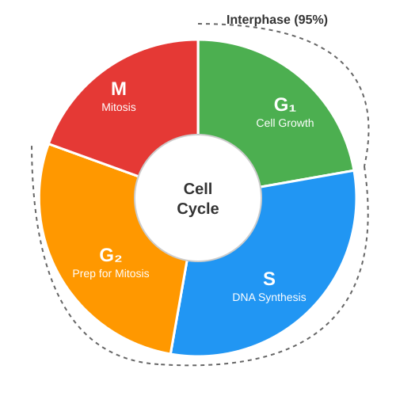
Figure 10.1: A diagrammatic view of the cell cycle
M Phase (Mitosis)
Mitosis, or equational division, is divided into four stages of nuclear division (karyokinesis):
- Prophase: Chromosomal material condenses to form compact mitotic chromosomes. Centrosomes move to opposite poles of the cell. Nuclear envelope breaks down.
- Metaphase: Chromosomes align at the equator of the cell to form the metaphase plate. Spindle fibres attach to kinetochores of chromosomes.
- Anaphase: Centromeres split and chromatids separate. Chromatids move to opposite poles.
- Telophase: Chromosomes cluster at opposite spindle poles and their identity is lost as discrete elements. Nuclear envelope assembles around the chromosome clusters.
Meiosis
The production of offspring by sexual reproduction includes the fusion of two gametes, each with a complete haploid set of chromosomes. Gametes are formed from specialised diploid cells. This specialised kind of cell division that reduces the chromosome number by half results in the production of haploid daughter cells. This kind of division is called meiosis.
Key features of meiosis:
- Involves two sequential cycles of nuclear and cell division called Meiosis I and Meiosis II but only a single cycle of DNA replication.
- It involves pairing of homologous chromosomes and recombination (crossing over) between non-sister chromatids of homologous chromosomes during Prophase I (specifically Pachytene stage).
- Four haploid cells are formed at the end of Meiosis II.
Competency Based Questions (Previous Years & Sample Papers)
Q1. A eukaryotic cell with a diploid chromosome number of $2n = 16$ undergoes the cell cycle. Let the DNA content of a single haploid genome be representing as $C$. Trace the theoretical mathematical number of chromosomes and the DNA content of the cell at the following specific stages: a) End of $G_1$ phase, b) End of $S$ phase, c) Metaphase of Mitosis, d) Anaphase of Mitosis (per entirely dividing cell), and e) Each daughter cell after Cytokinesis is complete.
Answer
Let’s trace the mathematically defined state of the cell based on $2n = 16$ and haploid genome content $= C$:
- The $G_1$ cell starts with diploid chromosomes ($2n$) and a DNA content of $2C$ (as it receives $1C$ from egg and $1C$ from sperm).
a) End of $G_1$ phase:
- Chromosomes: $2n = \mathbf{16}$
- DNA content: $\mathbf{2C}$
b) End of $S$ phase:
- Chromosomes: $2n = \mathbf{16}$ (The number of chromosomes does NOT change; they just consist of two sister chromatids each now).
- DNA content: $\mathbf{4C}$ (DNA has replicated).
c) Metaphase of Mitosis:
- Chromosomes: $2n = \mathbf{16}$ (Aligned at the equator).
- DNA content: $\mathbf{4C}$
d) Anaphase of Mitosis (entire cell):
- Chromosomes: $\mathbf{32}$ (When centromeres split, each sister chromatid is temporarily considered an independent, full-fledged chromosome pulling to opposite poles within the same undivided cell membrane).
- DNA content: $\mathbf{4C}$
e) Each daughter cell after Cytokinesis:
- Chromosomes: $2n = \mathbf{16}$ (One chromatid from anaphase became one chromosome).
- DNA content: $\mathbf{2C}$ (The $4C$ pool was divided equally back to the original $G_1$ state).
Q2. During Prophase I of meiosis, the phenomenon of crossing over occurs between non-sister chromatids of homologous chromosomes. Biologically, what is the primary evolutionary advantage of this process? Mathematically, if a cell possesses $n$ pairs of homologous chromosomes, how does the combination of random assortment at metaphase I and crossing over impact the geometric number of possible unique gametes from a single individual, compared to the baseline $2^n$ combinations without crossing over?
Answer
Evolutionary Advantage: The primary evolutionary advantage of crossing over is the generation of immense genetic variation. By physically breaking and exchanging DNA segments between maternal and paternal chromosomes, entirely new combinations of alleles (recombinant chromosomes) are created that did not exist in either parent. This genetic diversity within a population is crucial for adaptation and survival under changing environmental pressures, conferring the main benefit of sexual reproduction.
Mathematical Impact: Without crossing over, the independent assortment of chromosomes at metaphase I allows for $2^n$ unique chromosome combinations in gametes (where $n$ is the haploid number). For humans ($n=23$), this is $2^{23} \approx 8.4$ million unique gametes. However, because crossing over shuffles alleles within the chromosomes prior to assortment, it essentially creates infinite novel chromosomes. Therefore, crossing over multiplies the $2^n$ baseline geometry into a virtually infinite mathematical number of possible unique gamete combinations. It breaks the mathematical limit imposed by just sorting whole, intact chromosomes.
Q3. Anticancer drugs often work by disrupting specific phases of the cell cycle in rapidly dividing cancer cells. Drug A is a structural analog of thymidine. Drug B binds tightly to tubulin dimers, preventing microtubule assembly. Identify the exact phase of the cell cycle that each drug will specifically arrest, and explain the mechanistic reason why.
Answer
Drug A (Thymidine analog):
- Arrest Phase: It will arrest the cell cycle exclusively in the $S$ phase.
- Reasoning: The $S$ phase is the only phase where DNA replication occurs. To synthesize new DNA, the cell requires massive quantities of the four nucleotide bases, including Thymidine. If a structural analog of Thymidine is present, DNA polymerase will incorporate the fake molecule into the growing DNA strand, causing DNA synthesis to halt (chain termination) or critically fail, triggering a checkpoint arrest or apoptosis during the $S$ phase.
Drug B (Tubulin binder):
- Arrest Phase: It will arrest the cell cycle in M phase, specifically at Metaphase.
- Reasoning: Microtubules are biological polymers formed from tubulin dimers. They are the essential structural components of the mitotic spindle fibres. In Metaphase, the spindle fibres must attach to the kinetochores to pull chromosomes apart in Anaphase. If Drug B prevents microtubule assembly, the mitotic spindle cannot form. The cell will arrest at the spindle assembly checkpoint (M checkpoint) in metaphase because it cannot proceed to separate the chromatids.
Chapter 11: Photosynthesis in Higher Plants
All animals including human beings depend on plants for their food. Have you ever wondered from where plants get their food? Green plants, in fact, have to make or rather synthesise the food they need and all other organisms depend on them for their needs. The green plants make or rather synthesise the food they need through photosynthesis and are therefore called autotrophs.
Photosynthesis is a physico-chemical process by which they use light energy to drive the synthesis of organic compounds. Ultimately, all living forms on earth depend on sunlight for energy.
Where does Photosynthesis take place?
You would of course answer: in ‘the green leaf’ or ‘in the chloroplasts’. Photosynthesis does take place in the green leaves of plants but it does so also in other green parts of the plants. The mesophyll cells in the leaves, have a large number of chloroplasts. Usually the chloroplasts align themselves along the walls of the mesophyll cells, such that they get the optimum quantity of the incident light.
Within the chloroplast there is a membranous system consisting of grana, the stroma lamellae, and the matrix stroma.
- Membrane system: Responsible for trapping the light energy and also for the synthesis of ATP and NADPH (Light Reactions).
- Stroma: Enzymatic reactions synthesise sugar, which in turn forms starch (Dark Reactions).

Figure 11.1: Z scheme of light reaction showing Electron Transport
Light Reaction
Light reactions or the ‘Photochemical’ phase include light absorption, water splitting, oxygen release, and the formation of high-energy chemical intermediates, ATP and NADPH.
- Electron Transport (Z-Scheme): In Photosystem II (PS II) the reaction centre chlorophyll a absorbs 680 nm wavelength of red light causing electrons to become excited and jump into an orbit farther from the atomic nucleus. These are picked up by an electron acceptor which passes them to an electrons transport system consisting of cytochromes. The electrons are passed onto PS I. Simultaneously, electrons in the reaction centre of PS I are also excited when they receive red light of wavelength 700 nm.
- Splitting of Water: The electrons that were moved from PS II must be replaced. This is achieved by electrons available due to splitting of water: $2H\sb{2}O \rightarrow 4H^+ + O\sb{2} + 4e^-$.
Dark Reaction (Biosynthetic Phase)
This process does not directly depend on the presence of light but is dependent on the products of the light reaction, i.e., ATP and NADPH.
- $C\sb{3}$ Pathway (Calvin Cycle): Occurs in three stages: Carboxylation of RuBP by RuBisCO, Reduction of 3-PGA to triose phosphate, and Regeneration of RuBP.
- $C\sb{4}$ Pathway: Plants growing in dry tropical regions use this pathway. It involves two cell types: Mesophyll and Bundle Sheath cells. Primary $CO\sb{2}$ acceptor is PEP (Phosphoenolpyruvate) catalyzed by PEPcase, forming a 4-carbon compound (OAA). It avoids photorespiration.
Competency Based Questions (Previous Years & Sample Papers)
Q1. The energy required to excite an electron in a chlorophyll molecule is given by the Planck-Einstein relation: $E = \frac{hc}{\lambda}$, where $h$ is Planck’s constant, $c$ is the speed of light, and $\lambda$ is the wavelength of the photon. Photosystem I (PS I) has a distinct absorption peak at $700 \text{ nm}$, while Photosystem II (PS II) peaks at $680 \text{ nm}$. Compare equations for $E\sb{PSI}$ and $E\sb{PSII}$. Which photosystem requires higher energy photons to excite its reaction center? Explain structurally why this slight energy difference is crucial for the unidirectional Z-scheme of non-cyclic photophosphorylation.
Answer
Mathematical Comparison: Energy for PS I: $E\sb{PSI} = \frac{hc}{700 \text{ nm}}$ Energy for PS II: $E\sb{PSII} = \frac{hc}{680 \text{ nm}}$
Since energy ($E$) is inversely proportional to wavelength ($\lambda$), the photon with the smaller wavelength carries more energy. Therefore: $\frac{hc}{680} > \frac{hc}{700}$, meaning $E\sb{PSII} > E\sb{PSI}$. PS II requires higher energy photons.
Biological/Structural Justification: The Z-scheme functions as a thermodynamic “downhill-uphill-downhill” energy gradient. PS II must act first to split water (a very thermodynamically demanding process that requires an extremely strong oxidant $P680^+$). By using a slightly higher energy photon ($680$ nm), PS II generates an excited electron ($P680^*$) with enough potential energy to “fall down” an electron transport chain (via plastoquinone and cytochrome $b\sb{6}f$) to reach PS I, synthesizing ATP along the way. When the electron reaches PS I, it has lost energy. PS I then uses a slightly lower energy photon ($700$ nm) to re-excite this electron to a high enough redox potential to reduce $NADP^+$ to $NADPH$. The energy difference prevents back-flow and perfectly matches the split-water/reduce-NADP end goals.
Q2. During the Calvin cycle ($C\sb{3}$ pathway), the fixation of $6$ molecules of $CO\sb{2}$ to generate one molecule of glucose requires an input of both ATP and NADPH. Let the stoichiometric ratio of $ATP:NADPH$ required per $CO\sb{2}$ fixed be denoted as $R\sb{C3}$. For a $C\sb{4}$ plant (like Sugarcane), the spatial separation of initial fixation and the Calvin cycle imposes an additional energetic cost of 2 ATP per $CO\sb{2}$ to regenerate PEP in the mesophyll cells. Calculate the ratio $R\sb{C3}$ for the $C\sb{3}$ pathway, and then calculate the total ATP required to synthesize one molecule of glucose in a $C\sb{3}$ plant versus a $C\sb{4}$ plant.
Answer
For a $C_3$ plant (Calvin Cycle alone): To fix one molecule of $CO_2$:
- Reduction step requires 2 ATP and 2 NADPH.
- Regeneration step requires 1 ATP. Total per $CO\sb{2}$: 3 ATP and 2 NADPH. The ratio $R\sb{C3}$ ($ATP:NADPH$) is $3:2$ (or $1.5$).
To synthesize one glucose ($6$ $CO_2$ molecules):
- ATP required = $6 \cdot 3$ = 18 ATP (for a $C_3$ plant).
- (NADPH required = $6 \cdot 2 = 12$ NADPH).
For a $C_4$ plant: The inner bundle sheath cells still run the standard Calvin cycle (costing 18 ATP and 12 NADPH for 6 $CO_2$). However, the initial $C_4$ prep-cycle in the mesophyll costs an additional 2 ATP per $CO_2$ to convert pyruvate back into Phosphoenolpyruvate (PEP).
- Additional ATP cost = $6 \text{ } CO_2 \cdot 2 \text{ ATP} = 12 \text{ ATP}$. Total ATP required to synthesize one glucose in a $C_4$ plant = $18 \text{ (Calvin)} + 12 \text{ (PEP regeneration)}$ = 30 ATP.
(Note: While $C_4$ plants use more total ATP, they are overwhelmingly more efficient in hot, arid conditions because pumping the $CO_2$ eliminates the massive energy waste of photorespiration caused by RuBisCO’s oxygenase activity).
Q3. According to the Chemiosmotic Hypothesis, ATP synthesis in chloroplasts is driven by a proton ($H^+$) gradient established across the thylakoid membrane. If the internal thylakoid lumen has a pH of $4.0$ under active illumination, and the surrounding stroma has a pH of $8.0$, calculate the concentration gradient of protons $[H^+]\sb{lumen} / [H^+]\sb{stroma}$. Based on the $\Delta pH$, explain how the ATP synthase enzyme utilizes this specific gradient.
Answer
Mathematical Calculation: The definition of pH is log scale: $\text{pH} = -\log_{10}[H^+]$, so $[H^+] = 10^{-\text{pH}}$.
Proton concentration in the lumen: $[H^+]\sb{lumen} = 10^{-4} \text{ M}$ Proton concentration in the stroma: $[H^+]\sb{stroma} = 10^{-8} \text{ M}$
Ratio: $$ \frac{[H^+]\sb{lumen}}{[H^+]\sb{stroma}} = \frac{10^{-4}}{10^{-8}} = 10^{(-4 - (-8))} = 10^4 = 10,000 $$
The proton concentration inside the thylakoid lumen is 10,000 times greater than in the stroma.
Biological Explanation: This massive 10,000-fold concentration difference establishes a very strong proton motive force (electrochemical gradient). The thylakoid membrane is impermeable to protons, forcing the trapped protons to seek equilibrium by exiting the lumen exclusively through the $CF_0$ transmembrane channel of the ATP synthase enzyme. As protons physically flow down their massive concentration gradient through the $CF_0$ channel, the resulting kinetic/conformational energy causes the $CF_1$ head piece (located in the stroma) to undergo rotational conformational changes. This mechanical energy is harnessed to forcefully catalyze the bonding of ADP and Pi, synthesizing ATP in the stroma where it is immediately used for the Calvin cycle.
Chapter 12: Respiration in Plants
All of us breathe to live, but why is breathing so essential to life? What happens when we breathe? Also, do all living organisms, including plants and microbes, breathe? If so, how? All living organisms need energy for carrying out daily life activities, be it absorption, transport, movement, reproduction or even breathing. Where does all this energy come from? We know we eat food for energy – but how is this energy taken from food?
This chapter deals with cellular respiration or the mechanism of breakdown of food materials within the cell to release energy, and the trapping of this energy for synthesis of ATP.
Do Plants Breathe?
Well, the answer to this question is not quite so direct. Yes, plants require $O_2$ for respiration to occur and they also give out $CO_2$. Hence, plants have systems in place that ensure the availability of $O_2$. Plants, unlike animals, have no specialised organs for gaseous exchange but they have stomata and lenticels for this purpose.
Glycolysis
The term glycolysis has originated from the Greek words, glycos for sugar, and lysis for splitting. The scheme of glycolysis was given by Gustav Embden, Otto Meyerhof, and J. Parnas, and is often referred to as the EMP pathway. In anaerobic organisms, it is the only process in respiration.
Glycolysis occurs in the cytoplasm of the cell and is present in all living organisms. In this process, glucose undergoes partial oxidation to form two molecules of pyruvic acid. Substrate level phosphorylation occurs, yielding a net of 2 ATP per glucose molecule.
Fermentation
In fermentation, say by yeast, the incomplete oxidation of glucose is achieved under anaerobic conditions by sets of reactions where pyruvic acid is converted to $CO_2$ and ethanol. The enzymes, pyruvic acid decarboxylase and alcohol dehydrogenase catalyse these reactions. Other organisms like some bacteria produce lactic acid from pyruvic acid. In both types, not much energy is released; less than seven per cent of the energy in glucose is released and not all of it is trapped as high energy bonds of ATP.
Aerobic Respiration
For aerobic respiration to take place within the mitochondria, the final product of glycolysis, pyruvate is transported from the cytoplasm into the mitochondria. The crucial events in aerobic respiration are:
- The complete oxidation of pyruvate by the stepwise removal of all the hydrogen atoms, leaving three molecules of $CO_2$.
- The passing on of the electrons removed as part of the hydrogen atoms to molecular $O_2$ with simultaneous synthesis of ATP.
Tricarboxylic Acid Cycle (TCA Cycle / Krebs Cycle)
The TCA cycle starts with the condensation of acetyl group with oxaloacetic acid (OAA) and water to yield citric acid. The reaction is catalysed by the enzyme citrate synthase and a molecule of CoA is released. Citrate is then isomerised to isocitrate. It is followed by two successive steps of decarboxylation.

Figure 12.1: Outline of Aerobic Respiration
Electron Transport System (ETS) and Oxidative Phosphorylation
The metabolic pathway through which the electron passes from one carrier to another, is called the electron transport system (ETS) and it is present in the inner mitochondrial membrane. When electrons pass from one carrier to another via complex I to IV in the electron transport chain, they are coupled to ATP synthase (complex V) for the production of ATP from ADP and inorganic phosphate. The number of ATP molecules synthesised depends on the nature of the electron donor. Oxidation of one molecule of NADH gives rise to 3 molecules of ATP, while that of one molecule of $FADH_2$ produces 2 molecules of ATP. Oxygen acts as the final hydrogen acceptor.
Amphibolic Pathway
Glucose is the favoured substrate for respiration. All carbohydrates are usually first converted into glucose before they are used for respiration. Other substrates can also be respired, but they do not enter the respiratory pathway at the very first step. Because the respiratory pathway is involved in both breakdown (catabolism) and synthesis (anabolism) of molecules, it is better considered an amphibolic pathway.
Respiratory Quotient
The ratio of the volume of $CO_2$ evolved to the volume of $O_2$ consumed in respiration is called the respiratory quotient (RQ) or respiratory ratio. $$ RQ = \frac{\text{volume of } CO_2 \text{ evolved}}{\text{volume of } O_2 \text{ consumed}} $$ The respiratory quotient depends upon the type of respiratory substrate used during respiration. For carbohydrates, RQ is 1. For fats, it is less than 1.
Competency Based Questions (Previous Years & Sample Papers)
Q1. The complete combustion of Tripalmitin, a common triglyceride fat, is represented by the following chemical equation: $2(C_{51}H_{98}O_6) + 145O_2 \rightarrow 102CO_2 + 98H_2O + \text{Energy}$ Calculate the Respiratory Quotient (RQ) for the aerobic respiration of tripalmitin. If a plant’s measured RQ over a 24-hour period shifts from $1.0$ to $0.7$, what fundamental metabolic shift has likely occurred regarding its primary respiratory substrate?
Answer
Mathematical Calculation: The Respiratory Quotient (RQ) is defined as: $$ RQ = \frac{\text{Volume of } CO_2 \text{ evolved}}{\text{Volume of } O_2 \text{ consumed}} $$ From the balanced chemical equation, the stoichiometric coefficients indicate the relative volumes of gases (via Avogadro’s law). Volume of $CO_2$ evolved = $102$ Volume of $O_2$ consumed = $145$
$$ RQ_{\text{Tripalmitin}} = \frac{102}{145} $$ $$ RQ \approx 0.703 $$ The RQ is approximately $0.7$.
Metabolic Shift: An RQ of exactly $1.0$ indicates that the plant is primarily oxidizing carbohydrates (like glucose or starch) for energy. A shift to an RQ of $0.7$ strongly indicates that the plant has exhausted its available carbohydrate reserves and has shifted to beta-oxidation of fats/lipids as its primary respiratory substrate to generate ATP.
Q2. During glycolysis, a 6-carbon glucose molecule is broken down into two 3-carbon pyruvate molecules. This sequence involves an initial “investment” phase and a “payoff” phase. Let $-I$ be the number of ATP molecules consumed per glucose, and $+P$ be the number of ATP molecules directly generated via substrate-level phosphorylation per glucose. Write the balanced equation for the net ATP yield ($Net_{ATP} = P - I$). If a metabolic toxin completely inhibits the enzyme Phosphofructokinase (an enzyme in the investment phase), mathematically what is the functional ATP yield of glycolysis?
Answer
Glycolysis ATP Balance:
- Investment phase ($I$): 2 ATP are consumed (one to phosphorylate glucose to glucose-6-phosphate, and one to phosphorylate fructose-6-phosphate to fructose-1,6-bisphosphate). So, $I = 2$.
- Payoff phase ($P$): 4 ATP are directly generated via substrate-level phosphorylation (two from 1,3-bisphosphoglycerate and two from phosphoenolpyruvate) for every one glucose molecule (since 2 trioses are formed). So, $P = 4$.
Net ATP yield equation: $$ Net_{ATP} = P - I = 4 - 2 = 2 \text{ ATP} $$
Effect of Toxin: Phosphofructokinase (PFK) catalyzes the second ATP investment step (fructose-6-phosphate to fructose-1,6-bisphosphate). If this enzyme is completely inhibited, the pathway is severely bottlenecked. Mathematically, the cell has spent $1$ ATP (on Hexokinase) but cannot reach the cleavage step (Aldolase) to create the trioses that eventually produce the $4$ payoff ATPs. Therefore, $P$ becomes $0$. The investment $I$ is stuck at $1$. Functional net ATP yield = $0 - 1 = \mathbf{-1 \text{ ATP}}$. The cell continuously loses ATP trying to run glycolysis until it dies. Hence, PFK is precisely regulated as the major pacemaker of glycolysis.
Q3. Consider the theoretical ATP yield of aerobic respiration in classical eukaryotic models, where 1 NADH generates approximately 3 ATP, and 1 $FADH_2$ generates approximately 2 ATP. For a single glucose molecule undergoing complete oxidation, the net tallies are: - Glycolysis: 2 net ATP + 2 cytosolic NADH - Link Reaction: 2 NADH - Krebs Cycle: 2 ATP + 6 NADH + 2 $FADH_2$ If the cell uses the glycerol-3-phosphate shuttle (which transfers electrons from cytosolic NADH to mitochondrial FAD, dropping their energetic value to that of $FADH_2$), formulate an equation summing the total theoretical ATP. Conversely, what is the total if it uses the malate-aspartate shuttle (which retains the NADH value)?
Answer
Let’s sum the contributions components.
- Substrate-level ATP: $2 \text{ (Glycolysis)} + 2 \text{ (Krebs)} = \mathbf{4 \text{ ATP}}$
- Mitochondrial NADH (Link + Krebs): $2 + 6 = \mathbf{8 \text{ NADH}}$. Yield = $8 \cdot 3 = \mathbf{24 \text{ ATP}}$
- Mitochondrial $FADH_2$ (Krebs): $\mathbf{2 \text{ } FADH_2}$. Yield = $2 \cdot 2 = \mathbf{4 \text{ ATP}}$
- Cytosolic NADH (Glycolysis): $\mathbf{2 \text{ NADH}}$
Scenario 1: Glycerol-3-Phosphate Shuttle The 2 cytosolic NADH are essentially converted to $FADH_2$ equivalents inside the mitochondria. Yield of these 2 carriers = $2 \cdot 2 \text{ ATP/carrier} = \mathbf{4 \text{ ATP}}$. Total ATP = Substrate ATP (4) + Mito NADH ATP (24) + Mito $FADH_2$ ATP (4) + Shuttle ATP (4) $$ \text{Total} = 4 + 24 + 4 + 4 = \mathbf{36 \text{ ATP}} $$
Scenario 2: Malate-Aspartate Shuttle The 2 cytosolic NADH are shuttled efficiently to mitochondrial $NAD^+$, retaining their full value. Yield of these 2 carriers = $2 \cdot 3 \text{ ATP/carrier} = \mathbf{6 \text{ ATP}}$. Total ATP = Substrate ATP (4) + Mito NADH ATP (24) + Mito $FADH_2$ ATP (4) + Shuttle ATP (6) $$ \text{Total} = 4 + 24 + 4 + 6 = \mathbf{38 \text{ ATP}} $$
Therefore, depending on the shuttle, theoretical yield oscillates between 36 and 38 ATP.
Chapter 13: Plant - Growth and Development
You have already studied the organisation of a flowering plant in Chapter 5. Have you ever thought about where and how the structures like roots, stems, leaves, flowers, fruits and seeds arise and that too in an orderly sequence? Plant growth is virtually unlimited because they retain the capacity for unlimited growth throughout their life. This ability of the plants is due to the presence of meristems at certain locations in their body.
Growth and Development
Growth can be defined as an irreversible permanent increase in size of an organ or its parts or even of an individual cell. Generally, growth is accompanied by metabolic processes (both anabolic and catabolic), that occur at the expense of energy.
- Phases of Growth: The period of growth is generally divided into three phases, namely, meristematic, elongation and maturation.
- Arithmetic Growth: Following mitotic cell division, only one daughter cell continues to divide while the other differentiates and matures. (Mathematical expression: $L_t = L_0 + rt$).
- Geometric Growth: In most systems, the initial growth is slow (lag phase), and it increases rapidly thereafter – at an exponential rate (log or exponential phase). Both progeny cells following mitotic cell division retain the ability to divide. (Mathematical expression: $W_1 = W_0 e^{rt}$).
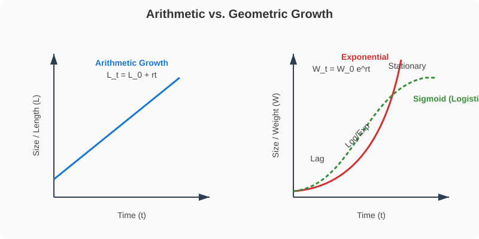
Figure 13.1: Graphical representation of Arithmetic vs Geometric Growth
Differentiation, Dedifferentiation and Redifferentiation
- Differentiation: The cells derived from root apical and shoot-apical meristems differentiate and mature to perform specific functions. During differentiation, cells undergo few to major structural changes both in their cell walls and protoplasm.
- Dedifferentiation: The living differentiated cells, that by now have lost the capacity to divide can regain the capacity of division under certain conditions. This phenomenon is termed as dedifferentiation.
- Redifferentiation: Plant products of dedifferentiation once again lose the capacity to divide and mature to perform specific functions.
Plant Growth Regulators (PGRs)
The plant growth regulators (PGRs) are small, simple molecules of diverse chemical composition.
- Auxins: (e.g., IAA) Induce rooting, apical dominance, and prevent premature fruit drop.
- Gibberellins: (e.g., $GA_3$) Cause elongation of intact stems, bolting in rosette plants, and delay senescence.
- Cytokinins: (e.g., Zeatin) Induce cell division, overcome apical dominance, and promote lateral shoot growth.
- Ethylene: A gaseous PGR. Highly effective in fruit ripening and inducing senescence and abscission of plant organs.
- Abscisic acid (ABA): Acts as a general plant growth inhibitor and an inhibitor of plant metabolism. It stimulates the closure of stomata (stress hormone).
Competency Based Questions (Previous Years & Sample Papers)
Q1. Consider the geometric (exponential) growth of a bacterial colony, modeled by the equation $W_t = W_0 e^{rt}$, where $W_t$ is the final population size, $W_0$ is the initial population size, $e$ is the base of natural logarithms ($\approx 2.718$), $r$ is the relative growth rate, and $t$ is time. A culture starts with exactly $1,000$ cells ($W_0=1000$). After $10$ hours ($t=10$), the population has grown to exactly $1,000,000$ cells. Calculate the specific relative growth rate $r$ per hour for this colony. Provide the answer in terms of natural logarithm ($\ln$). Why does a plant’s overall growth eventually deviate from this exponential model?
Answer
Mathematical Calculation: Given: $W_0 = 1,000$ $W_t = 1,000,000$ $t = 10 \text{ hours}$ Equation: $W_t = W_0 e^{rt}$
Substitute the known values: $$ 1,000,000 = 1000 \cdot e^{r \cdot 10} $$ Divide both sides by $1,000$: $$ 1000 = e^{10r} $$ Take the natural logarithm ($\ln$) of both sides to isolate the exponent: $$ \ln(1000) = \ln(e^{10r}) $$ $$ \ln(10^3) = 10r $$ $$ 3\ln(10) = 10r $$ $$ r = \frac{3\ln(10)}{10} \text{ hour}^{-1} $$ (Alternatively, $r = \frac{\ln(1000)}{10}$). Approximately $r \approx 0.69 \text{ hr}^{-1}$.
Biological Justification: While early embryonic growth or bacterial cultures in fresh media grow exponentially, overall growth in plants and natural populations eventually deviates from this model and follows a logistic (sigmoid) curve. This deviation occurs because of limiting factors such as nutrient depletion, limited space, accumulation of toxic metabolic byproducts, and the eventual maturation and programmed senescence of tissues, forcing the growth rate to plateau (reaching the carrying capacity).
Q2. During tissue culture experiments, a piece of mature, differentiated potato parenchyma (the explant) is placed on a sterile nutrient medium containing specific Plant Growth Regulators (PGRs). The cells lose their specific differentiation and begin to divide to form an unorganized mass of cells called a callus. A few weeks later, adjusting the ratio of Auxins to Cytokinins causes the callus cells to stop dividing and mature into functional vascular tissue and roots. Identify and sequentially name the three biological cellular processes taking place in this entire sequence.
Answer
The sequence explicitly demonstrates the incredible plasticity of plant cells. The three sequential processes are:
- Differentiation (initial state): The potato parenchyma cells were already fully functional, mature cells that had lost their capacity to divide in the intact plant.
- Dedifferentiation: When placed in tissue culture with PGRs, the mature parenchyma cells regained their mitotic activity and dividing capacity, forming the undifferentiated mass of cells (callus).
- Redifferentiation: Upon changing the PGR ratio (specifically applying a higher ratio of Auxins to Cytokinins to induce root formation), the callus cells once again lost their ability to divide and matured to perform entirely specific new functions (becoming vascular tissue and roots).
Q3. Fruit growers often face the problem of synchronous fruit ripening. To quickly ripen an entire warehouse of green tomatoes uniformly, a specific volatile plant growth regulator is commonly pumped into the storage rooms. Name this specific PGR. Explain the biochemical mechanism by which this PGR accelerates ripening, and state one other commercially desirable physiological effect it has on crop plants when applied via aqueous solutions like ethephon.
Answer
PGR Identification: The specific volatile (gaseous) PGR is Ethylene.
Biochemical Mechanism: Ethylene accelerates fruit ripening by acting as a powerful hormone that triggers a massive, sudden spike in the respiration rate of the fruit, a phenomenon called the respiratory climacteric. It induces the transcription and translation of enzymes responsible for ripening: hydrolases (which break down starch into sweet sugars), pectinases (which dissolve the middle lamella, softening the fruit), and chlorophyllases (which break down green chlorophyll, revealing the red/yellow pigments underneath).
Other Commercial Effect: When applied as an aqueous solution (like ethephon), it is absorbed readily and releases ethylene slowly. Aside from ripening, it is highly desirable for inducing uniform fruit abscission for mechanical harvesting (e.g., in walnuts and cotton) or promoting female flowers in monoecious plants like cucumbers, which drastically increases the fruit yield.
Chapter 14: Breathing and Exchange of Gases
As you have read earlier, oxygen ($O_2$) is utilised by the organisms to indirectly break down simple molecules like glucose, amino acids, fatty acids, etc., to derive energy to perform various activities. Carbon dioxide ($CO_2$) which is harmful is also released during the above catabolic reactions. It is, therefore, evident that $O_2$ has to be continuously provided to the cells and $CO_2$ produced by the cells has to be released out. This process of exchange of $O_2$ from the atmosphere with $CO_2$ produced by the cells is called breathing, commonly known as respiration.
Respiratory Organs
Mechanisms of breathing vary among different groups of animals depending mainly on their habitats and levels of organisation.
- Lower invertebrates: Sponges, coelenterates, flatworms exchange $O_2$ with $CO_2$ by simple diffusion over their entire body surface.
- Insects: Have a network of tubes (tracheal tubes) to transport atmospheric air within the body.
- Aquatic animals: Special vascularised structures called gills (branchial respiration) are used by most fishes and aquatic arthropods/molluscs.
- Terrestrial animals: Vascularised bags called lungs (pulmonary respiration) are used by terrestrial forms for the exchange of gases.
Human Respiratory System
We have a pair of external nostrils opening out above the upper lips. It leads to a nasal chamber through the nasal passage. The nasal chamber opens into the pharynx, a portion of which is the common passage for food and air. The pharynx opens through the larynx region into the trachea. The larynx is a cartilaginous box which helps in sound production and hence called the sound box.
Trachea is a straight tube extending up to the mid-thoracic cavity, which divides at the level of 5th thoracic vertebra into a right and left primary bronchi. Each bronchus undergoes repeated divisions to form the secondary and tertiary bronchi and bronchioles ending up in very thin terminal bronchioles. The terminal bronchioles give rise to a number of very thin, irregular-walled and vascularised bag-like structures called alveoli.

Figure 14.1: Schematic of the Human Respiratory System
Mechanism of Breathing
Breathing involves two stages: inspiration during which atmospheric air is drawn in and expiration by which the alveolar air is released out. The movement of air into and out of the lungs is carried out by creating a pressure gradient between the lungs and the atmosphere.
- Inspiration occurs if the pressure within the lungs (intra-pulmonary pressure) is less than the atmospheric pressure, i.e., there is a negative pressure in the lungs with respect to atmospheric pressure.
- Expiration takes place when the intra-pulmonary pressure is higher than the atmospheric pressure. The diaphragm and a specialised set of muscles – external and internal intercostals between the ribs, help in generation of such gradients.
Respiratory Volumes and Capacities
- Tidal Volume (TV): Volume of air inspired or expired during a normal respiration (approx. 500 mL).
- Inspiratory Reserve Volume (IRV): Additional volume of air, a person can inspire by a forcible inspiration (2500 - 3000 mL).
- Expiratory Reserve Volume (ERV): Additional volume of air, a person can expire by a forcible expiration (1000 - 1100 mL).
- Residual Volume (RV): Volume of air remaining in the lungs even after a forcible expiration (1100 - 1200 mL). This prevents the alveoli from collapsing.
Competency Based Questions (Previous Years & Sample Papers)
Q1. According to Boyle’s Law, the absolute pressure $P$ and volume $V$ of a given mass of confined gas are inversely proportional at a constant temperature ($P_1V_1 = P_2V_2$). During human inspiration, the contraction of the diaphragm and the external intercostal muscles increases the overall volume of the thoracic cavity by approximately $2%$ over its resting Functional Residual Capacity ($FRC$ of $\sim 2500$ mL). If atmospheric pressure is $760$ mmHg, what is the theoretical new intra-pulmonary pressure immediately after this $2%$ volume expansion (before any air flows in)? Explain why air subsequently rushes into the lungs.
Answer
Mathematical Calculation: Initial Volume $V_1 = 2500 \text{ mL}$. Initial intra-pulmonary pressure (resting, equilibrium with atmosphere) $P_1 = 760 \text{ mmHg}$.
The volume expands by $2%$. New Volume $V_2 = 2500 + 0.02(2500) = 2500 + 50 = 2550 \text{ mL}$.
Using Boyle’s Law ($P_1V_1 = P_2V_2$): $$ 760 \cdot 2500 = P_2 \cdot 2550 $$ $$ P_2 = \frac{760 \cdot 2500}{2550} $$ $$ P_2 = 760 \cdot \frac{50}{51} \approx 760 \cdot 0.9804 \approx 745.1 \text{ mmHg} $$
The theoretical new intra-pulmonary pressure is roughly $745.1$ mmHg (a drop of about $15$ mmHg, though in reality, normal steady inspiration only requires a drop of $\sim 1-2$ mmHg to draw in a tidal volume, meaning the actual thoracic expansion for quiet breathing is much less than $2%$, but mathematically based on the prompt, it scales down).
Biological Explanation: Because the new intra-pulmonary pressure ($745.1$ mmHg) is now less than the external atmospheric pressure ($760$ mmHg), a negative pressure gradient is established. Gases strictly move from areas of higher pressure to areas of lower pressure. Therefore, atmospheric air rushes through the conducting airways into the lungs until the intra-pulmonary pressure equalizes with the atmospheric pressure.
Q2. The specific rate of diffusion of gases across the alveolar-capillary membrane is mathematically governed by Fick’s Law of Diffusion: $V_{gas} \propto \frac{A}{T} \cdot D \cdot (P_1 - P_2)$, where $A$ is the surface area, $T$ is the membrane thickness, $D$ is the diffusion constant for the gas, and $(P_1 - P_2)$ is the partial pressure gradient. Emphysema is a chronic respiratory disorder associated with severe cigarette smoking. Structurally, emphysema results in the destruction of the alveolar walls, merging many tiny alveoli into fewer, vastly larger irregular air spaces. Based strictly on Fick’s Law, which specific variable is pathologically altered in emphysema, and mathematically how does this affect the net diffusion rate of oxygen?
Answer
Affected Variable: In emphysema, the destruction of the delicate interior alveolar septa (walls) means that what used to be hundreds of tiny, separate bubbles (high surface-to-volume ratio) merge into a few large, balloon-like spaces. Therefore, the specific variable that is pathologically altered is $A$, the total respiratory surface area.
Mathematical Effect on Diffusion: According to Fick’s Law of Diffusion ($V_{gas} \propto A$), the rate of gas diffusion ($V_{gas}$) is directly proportional to the available surface area ($A$). Because emphysema drastically decreases the total surface area $A$ available for gas exchange in the lungs, the mathematical consequence is a proportional decrease in the net diffusion rate of oxygen (and $CO_2$). Consequently, the patient suffers from chronic hypoxia (oxygen deprivation) and shortness of breath, regardless of how deeply they inhale, because the physical membrane interface required for the gas exchange has been permanently lost.
Q3. Human Vital Capacity (VC) represents the maximum volume of air a person can breathe in after a forced expiration. Write the mathematical equation that defines Vital Capacity (VC) strictly in terms of the standard lung capacities (Tidal Volume (TV), Inspiratory Reserve Volume (IRV), and Expiratory Reserve Volume (ERV)). If a healthy athlete has a $TV = 500$ mL, $IRV = 3000$ mL, $ERV = 1200$ mL, and Residual Volume (RV) = $1200$ mL, calculate their Total Lung Capacity (TLC). Why can TLC never be explicitly measured using simply a spirometer?
Answer
Mathematical Equations and Calculations: Vital Capacity ($VC$) is the sum of the maximum inhale volume on top of a normal breath, the normal breath, and the maximum exhale volume. Equation: $VC = IRV + TV + ERV$
Total Lung Capacity ($TLC$) is the total volume of air the lungs can hold after a maximum forced inspiration. It is the Vital Capacity plus the Residual Volume. Equation: $TLC = VC + RV$ (or $TLC = IRV + TV + ERV + RV$)
Calculating $TLC$ for the athlete: $VC = 3000 + 500 + 1200 = 4700 \text{ mL}$ $TLC = 4700 + 1200 = \mathbf{5900 \text{ mL}}$ (or 5.9 Liters).
Spirometry Limitation: A standard spirometer functions by measuring the volume and flow of air that is explicitly inhaled into or exhaled out of the lungs through the mouthpiece. Therefore, a spirometer can only measure exchangeable air volumes ($TV$, $IRV$, $ERV$, and thus $VC$). Residual Volume (RV) is the volume of air that permanently remains in the lungs to keep the alveoli open; it can never be exhaled. Since the RV never passes through the spirometer, nor can $TLC$ (which includes $RV$) be directly measured. Computing $RV$ (and thus $TLC$) requires more complex indirect methods like helium dilution or body plethysmography.
Chapter 15: Body Fluids and Circulation
You have learnt that all living cells have to be provided with nutrients, $O_2$ and other essential substances. Also, the waste or harmful substances produced, have to be removed continuously for healthy functioning of tissues. It is therefore, essential to have efficient mechanisms for the movement of these substances to the cells and from the cells.
Blood is the most commonly used body fluid by most of the higher organisms including humans for this purpose. Another body fluid, lymph, also helps in the transport of certain substances.
Blood
Blood is a special connective tissue consisting of a fluid matrix, plasma, and formed elements.
- Plasma: A straw coloured, viscous fluid constituting nearly $55%$ of the blood. $90-92%$ of plasma is water and proteins contribute $6-8%$ of it. Fibrinogen, globulins and albumins are the major proteins.
- Formed Elements: Erythrocytes, leucocytes and platelets collectively are called formed elements and they constitute nearly $45%$ of the blood.
- Erythrocytes (RBCs): The most abundant of all the cells in blood. A healthy adult man has, on an average, 5 million to 5.5 million of RBCs $mm^{-3}$ of blood.
- Leucocytes (WBCs): Colourless due to the lack of haemoglobin. They are nucleated and are relatively lesser in number which averages $6000-8000$ $mm^{-3}$ of blood.
- Platelets: Also called thrombocytes, are cell fragments produced from megakaryocytes (special cells in the bone marrow).
Human Circulatory System
Human circulatory system, also called the blood vascular system consists of a muscular chambered heart, a network of closed branching blood vessels and blood, the fluid which is circulated.
Heart, the mesodermally derived organ, is situated in the thoracic cavity, in between the two lungs, slightly tilted to the left. It has the size of a clenched fist. It is protected by a double walled membranous bag, pericardium, enclosing the pericardial fluid. Our heart has four chambers, two relatively small upper chambers called atria and two larger lower chambers called ventricles.

Figure 15.1: Sectional view of the human heart
Cardiac Cycle and Output
To begin with, all the four chambers of heart are in a relaxed state, i.e., they are in joint diastole. Blood flows into atria, leading to atrial systole, which pumps blood into ventricles. The ventricular systole follows, heavily pumping blood out into the pulmonary artery and the aorta.
The volume of blood pumped out by each ventricle per minute is called the cardiac output and it is equal to the product of stroke volume (approx. $70$ mL) and heart rate (approx. $72$ beats/min), which averages out to $5000$ mL or $5$ litres in a healthy individual.
Electrocardiograph (ECG)
An ECG is a graphical representation of the electrical activity of the heart during a cardiac cycle. The standard ECG consists of:
- P-wave: Represents the electrical excitation (or depolarisation) of the atria, which leads to the contraction of both the atria.
- QRS complex: Represents the depolarisation of the ventricles, which initiates the ventricular contraction.
- T-wave: Represents the return of the ventricles from excited to normal state (repolarisation).
Competency Based Questions (Previous Years & Sample Papers)
Q1. Cardiac output ($CO$) is defined mathematically as the product of Heart Rate ($HR$, in beats/min) and Stroke Volume ($SV$, in mL/beat): $CO = HR \cdot SV$. During intense aerobic exercise, a highly trained athlete’s heart rate increases to $180$ beats/min, and their Stroke Volume increases to $140$ mL/beat. Calculate the athlete’s cardiac output during this exercise in Liters per minute. If a normal resting cardiac output is roughly $5.0$ L/min, by what factor has the athlete’s heart increased its pumping efficiency to meet the immense oxygen demands of the skeletal muscles?
Answer
Mathematical Calculation: Given: $HR_{exercise} = 180 \text{ beats/min}$ $SV_{exercise} = 140 \text{ mL/beat}$
Calculate $CO_{exercise}$: $$ CO = HR \cdot SV $$ $$ CO = 180 \text{ beats/min} \cdot 140 \text{ mL/beat} $$ $$ CO = 25,200 \text{ mL/min} $$
Convert mL to Liters ($1$ L = $1000$ mL): $$ CO = \frac{25,200}{1000} = \mathbf{25.2 \text{ L/min}} $$
Comparing to resting CO: Given $CO_{resting} = 5.0 \text{ L/min}$ $$ \text{Factor} = \frac{CO_{exercise}}{CO_{resting}} = \frac{25.2}{5.0} = \mathbf{5.04} $$
The athlete’s heart has increased its pumping output by a factor of roughly $5$ times (or increased by $400%$) compared to its resting state, effectively circulating the entire blood volume of the body $5$ times a minute to satisfy the immense oxygen requirement of the contracting muscles.
Q2. The universal donor and universal recipient blood groups in the ABO system are traditionally taught as O negative (O-) and AB positive (AB+), respectively. Consider a patient with blood type B-. List all the possible blood types this patient can safely receive in a massive transfusion without triggering an acute hemolytic transfusion reaction. Genetically, what happens regarding antigens and antibodies if this patient mistakenly receives A+ blood?
Answer
Safe Transfusions for B- patient: The B- patient’s red blood cells have “B” antigens and lack the “Rh(D)” antigen. Therefore, the patient’s plasma naturally contains pre-formed anti-A antibodies, and will produce anti-Rh antibodies if exposed to Rh+ blood. They can safely receive only:
- B- (exact match)
- O- (universal donor for RBCs, lacks A, B, and Rh antigens)
Reaction to A+ blood: If the B- patient receives A+ blood, two major immunological incompatibilities occur:
- ABO Mismatch: The patient’s pre-existing anti-A antibodies will immediately recognize, bind to, and attack the incoming A+ red blood cells. This triggers the complement cascade, causing rapid, massive lysis of the donor RBCs (acute hemolytic reaction).
- Rh Mismatch: The patient’s immune system detects the foreign Rh(D) antigen on the donor cells and begins synthesizing anti-Rh antibodies, sensitizing the patient and causing delayed hemolysis of any remaining donor cells (and endangering any future Rh+ exposures, such as a pregnancy).
Q3. On a standard clinical ECG tracing, the interval from the beginning of the P-wave to the beginning of the QRS complex is known as the PR interval (normal duration: $0.12 - 0.20$ seconds). Functionally, this interval represents the time taken for the electrical impulse generated by the SA node to travel through the atria and the AV node before reaching the ventricles. If a patient’s ECG consistently shows a massively prolonged PR interval of $0.35$ seconds, where specifically in the anatomical conduction system of the heart is the pathological delay likely occurring, and structurally why is a slight delay specifically designed into that exact node in a healthy heart?
Answer
Location of Pathological Delay: The pathological delay is occurring at the Atrioventricular (AV) node. A prolonged PR interval is the diagnostic hallmark of a First-Degree AV Block, meaning the electrical signal is struggling to cross the AV node to reach the Bundle of His.
Biological Purpose of the Normal Delay: In a healthy heart, there is a built-in, slight physiological delay ($\sim0.10$ seconds) specifically at the AV node. The fibers of the AV node are very narrow and have high electrical resistance compared to Purkinje fibers. This intentional delay is structurally critical because it ensures that the atria fully contract and completely empty their blood volume into the ventricles before the ventricles begin to contract. If the signal traveled instantly (without the AV node delay), the atria and ventricles would contract simultaneously, slamming blood against closed valves and drastically reducing stroke volume and cardiac efficiency.
Chapter 16: Excretory Products and their Elimination
Animals accumulate ammonia, urea, uric acid, carbon dioxide, water and ions like $Na^+$, $K^+$, $Cl^-$, phosphate, sulphate, etc., either by metabolic activities or by other means like excess ingestion. These substances have to be removed totally or partially. This chapter deals with the mechanisms of elimination of these substances with special emphasis on common nitrogenous wastes.
Ammonia, urea and uric acid are the major forms of nitrogenous wastes excreted by the animals. Ammonia is the most toxic form and requires large amount of water for its elimination, whereas uric acid, being the least toxic, can be removed with a minimum loss of water.
Human Excretory System
In humans, the excretory system consists of a pair of kidneys, one pair of ureters, a urinary bladder and a urethra. Kidneys are reddish brown, bean shaped structures situated between the levels of last thoracic and third lumbar vertebra close to the dorsal inner wall of the abdominal cavity.
Each kidney has nearly one million complex tubular structures called nephrons, which are the functional units. Each nephron has two parts – the glomerulus and the renal tubule.
The Nephron
Glomerulus is a tuft of capillaries formed by the afferent arteriole. Blood from the glomerulus is carried away by an efferent arteriole. The renal tubule begins with a double walled cup-like structure called Bowman’s capsule, which encloses the glomerulus. Glomerulus alongwith Bowman’s capsule, is called the Malpighian body or renal corpuscle. The tubule continues further to form a highly coiled network – Proximal Convoluted Tubule (PCT). A hairpin shaped Henle’s loop is the next part of the tubule which has a descending and an ascending limb. The ascending limb continues as another highly coiled tubular region called Distal Convoluted Tubule (DCT).
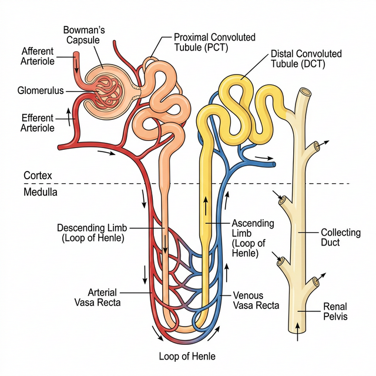
Figure 16.1: Structure of a typical Nephron
Urine Formation
Urine formation involves three main processes namely, glomerular filtration, reabsorption and secretion, that takes place in different parts of the nephron.
- Glomerular Filtration: The first step in urine formation is the filtration of blood, which is carried out by the glomerulus and is called glomerular filtration. On average, $1100-1200$ mL of blood is filtered by the kidneys per minute.
- Reabsorption: A comparison of the volume of the filtrate formed per day (180 litres per day) with that of the urine released (1.5 litres), suggest that nearly 99 per cent of the filtrate has to be reabsorbed by the renal tubules.
- Secretion: During urine formation, the tubular cells secrete substances like $H^+$, $K^+$ and ammonia into the filtrate.
Regulation of Kidney Function
The functioning of the kidneys is efficiently monitored and regulated by hormonal feedback mechanisms involving the hypothalamus, JGA and to a certain extent, the heart.
- Antidiuretic Hormone (ADH): Released from the posterior pituitary, it facilitates water reabsorption from latter parts of the tubule, thereby preventing diuresis (excess urine loss).
- Renin-Angiotensin mechanism: The JGA plays a complex regulatory role. A fall in glomerular blood pressure activates JG cells to release renin which converts angiotensinogen to angiotensin I and further to angiotensin II (a powerful vasoconstrictor and stimulator of aldosterone).
Competency Based Questions (Previous Years & Sample Papers)
Q1. The glomerular filtration rate (GFR) in a healthy adult is roughly $125 \text{ mL/min}$. The total plasma volume of an average human is approximately $3000 \text{ mL}$ (3 Liters). Calculate the number of times the entire plasma volume is filtered by the kidneys in a standard 24-hour day. If a pharmaceutical drug is specifically designed to completely block the sodium-glucose transport proteins (SGLT2) in the Proximal Convoluted Tubule, dynamically how will this alter the final urine output volume and its glucose concentration?
Answer
Mathematical Calculation:
-
Calculate total GFR per day: $GFR_{day} = 125 \text{ mL/min} \cdot 60 \text{ min/hour} \cdot 24 \text{ hours/day}$ $GFR_{day} = 125 \cdot 1440 = 180,000 \text{ mL/day}$ ($180 \text{ L/day}$)
-
Compare to Plasma Volume: $\text{Number of times filtered} = \frac{180,000 \text{ mL}}{3000 \text{ mL}} = \mathbf{60 \text{ times}}$. The entire blood plasma volume is filtered mathematically $60$ times every $24$ hours.
Drug Effect on Output: Under normal conditions, $100%$ of glucose is reabsorbed via SGLT2 transporters in the Proximal Convoluted Tubule (PCT). If this transporter is blocked by a drug (like an SGLT2 inhibitor used for diabetes):
- Glucose Concentration: Glucose is not reabsorbed and thus remains trapped in the tubular filtrate. The final urine will have a highly elevated glucose concentration (glucosuria).
- Urine Volume: Because glucose is an osmotically active solute, its presence in the tubule prevents the obligatory reabsorption of water via osmosis. This causes osmotic diuresis, resulting in a significantly increased final urine output volume (polyuria).
Q2. Desert mammals, such as the Kangaroo Rat, survive the harsh arid environment without ever needing to drink free water. Their survival depends exclusively on metabolic water generation and drastic minimization of excretory water loss. Structurally, the Kangaroo Rat has incredibly long Loops of Henle that extend deep into the inner medulla. According to the counter-current multiplier mechanism, biologically and mathematically, how does the extreme length of the Loop of Henle correlate to the extreme concentration (high osmolarity) of their final urine compared to humans?
Answer
Mechanism and Correlation: The principal function of the Loop of Henle is to create a massive osmolar gradient in the medullary interstitium. The ascending limb actively pumps out $NaCl$ but is strictly impermeable to water. The descending limb is highly permeable to water but impermeable to ions. Because the fluids flow in opposite directions (counter-current), the $NaCl$ pumped out by the ascending limb continuously “multiplies” the osmotic pressure acting on the descending limb.
Mathematically/Structurally: The concentrating power (the maximum osmolarity the medullary interstitium can reach) is directly proportional to the physical length of the Loop of Henle. A longer loop provides a vastly extended physical distance for the counter-current multiplier to establish a much steeper and higher concentration gradient deeply in the medulla. While human medullary tissue reaches a maximum of about $1200 \text{ mOsmolL}^{-1}$, the incredibly long loops of the Kangaroo rat allow their medulla to reach an astounding $5000-6000 \text{ mOsmolL}^{-1}$. When their collecting ducts pass completely through this highly concentrated medulla under the influence of ADH, massive amounts of water are osmotically reabsorbed back into the blood, producing highly concentrated, almost solid-like urine, effectively eliminating water loss almost entirely.
Q3. Uricotelism is the standard mode of excretion in terrestrial birds and reptiles. Uric acid is extremely insoluble in water, allowing these animals to excrete it as a semi-solid white paste with minimal water loss, which is highly advantageous for conserving water and minimizing body weight for flight. However, synthesizing uric acid from ammonia is an intensely energetically expensive multi-step biochemical pathway compared to producing urea or direct ammonia. Formulate an evolutionary argument explaining why natural selection favored this metabolically expensive pathway specifically for oviparous (egg-laying) terrestrial vertebrates.
Answer
Evolutionary Argument: The evolutionary development of uricotelism in birds and reptiles is directly tied to their mode of reproduction: the amniotic egg.
A terrestrial, shelled amniotic egg is a closed system. The developing embryo cannot constantly flush waste products out into a surrounding aquatic environment (like fish or amphibian embryos can with ammonia) nor can it transfer waste through a placenta to the mother’s blood (like mammalian embryos can with urea).
If a bird or reptile embryo produced ammonia or urea, these highly soluble, toxic compounds would accumulate instantly within the limited fluid of the egg, reaching lethal concentrations and poisoning the embryo long before it could hatch.
By expending the massive metabolic energy required to convert nitrogenous wastes into uric acid, the embryo yields a compound that is entirely insoluble in water. The uric acid rapidly precipitates out of the embryonic fluids as solid, harmless crystals. These crystals are stored safely in the allantois (a specialized extraembryonic sac) throughout incubation without altering the osmolarity or toxicity of the vital fluids, ensuring the embryo’s survival. Thus, the extreme energy cost is selected for because it exclusively permits reproduction inside a terrestrial egg.
Chapter 17: Locomotion and Movement
Movement is one of the significant features of living beings. Animals and plants exhibit a wide range of movements. Streaming of protoplasm in the unicellular organisms like Amoeba is a simple form of movement. Movement of cilia, flagella and tentacles are shown by many organisms. Human beings can move limbs, jaws, eyelids, tongue, etc. Some of the movements result in a change of place or location. Such voluntary movements are called locomotion.
Types of Movement
Cells of the human body exhibit three main types of movements, namely:
- Amoeboid: Exhibited by macrophages and leucocytes in blood, caused by streaming of protoplasm to form pseudopodia.
- Ciliary: Occurs in most of our internal tubular organs which are lined by ciliated epithelium (e.g., removing dust in the trachea, passage of ova through the female reproductive tract).
- Muscular: Movement of our jaws, limbs, tongue, etc. requires muscular movement. The contractile property of muscles is effectively used for locomotion.
Muscle
Muscle is a specialised tissue of mesodermal origin. Based on their location, three types of muscles are identified: Skeletal, Visceral, and Cardiac. Skeletal muscles are closely associated with the skeletal components of the body. They have a striped appearance under the microscope and hence are called striated muscles. As their activities are under the voluntary control of the nervous system, they are known as voluntary muscles too.
Structure of Contractile Proteins
Each skeletal muscle consists of many muscle bundles (fascicles), which in turn contain muscle fibres. Each muscle fibre contains parallelly arranged myofibrils. Each myofibril has alternate dark and light bands on it. This striated appearance is due to the distribution pattern of two important proteins – Actin and Myosin.
- Actin: Forms the light bands (I-band or Isotropic band). The filaments are thinner.
- Myosin: Forms the dark band (A-band or Anisotropic band). The filaments are thicker.
The portion of the myofibril between two successive ‘Z’ lines is considered as the functional unit of contraction and is called a sarcomere.
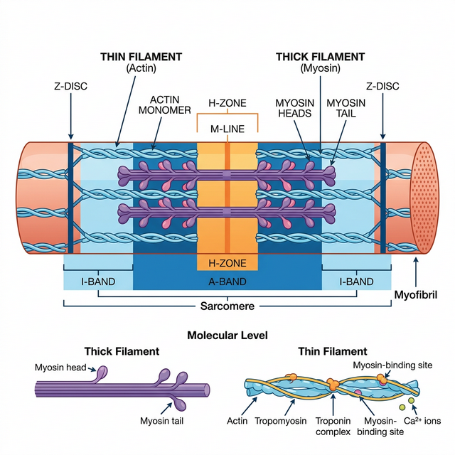
Figure 17.1: Diagrammatic representation of a Sarcomere
Mechanism of Muscle Contraction
Mechanism of muscle contraction is best explained by the sliding filament theory which states that contraction of a muscle fibre takes place by the sliding of the thin filaments (actin) over the thick filaments (myosin).
- Muscle contraction is initiated by a signal sent by the central nervous system (CNS) via a motor neuron.
- This releases a neurotransmitter (Acetylcholine) at the neuromuscular junction, generating an action potential in the sarcolemma.
- This triggers the release of Calcium ions ($Ca^{++}$) from the sarcoplasmic reticulum into the sarcoplasm.
- Calcium binds to troponin on actin filaments, unmasking the active sites for myosin.
- Utilising the energy from ATP hydrolysis, the myosin head binds to the exposed active sites on actin to form a cross-bridge, pulling the attached actin filaments towards the centre of the ‘A’ band.
Skeletal System and Joints
Skeletal system consists of a framework of bones and a few cartilages (total 206 bones in humans). Joints are points of contact between bones, or between bones and cartilages.
- Fibrous joints: Do not allow any movement (e.g., flat skull bones fusing via sutures).
- Cartilaginous joints: The bones involved are joined together with the help of cartilages, permitting limited movement (e.g., between vertebrae).
- Synovial joints: Characterised by the presence of a fluid-filled synovial cavity between the articulating surfaces. Allow considerable movement (e.g., Ball and socket joint, Hinge joint).
Competency Based Questions (Previous Years & Sample Papers)
Q1. According to the sliding filament theory, during maximum skeletal muscle contraction, the length of the A-band mathematically remains strictly constant, while the I-band shortens. If the resting length of a single sarcomere is $2.5 \mu m$, the A-band (thick filaments) is $1.6 \mu m$ long, and the specific Z-lines are assumed dimensionless, calculate the total length of the I-band region belonging to this sarcomere at rest. If the maximum contraction allows the thin filaments to meet exactly in the center of the H-zone (reducing the H-zone to $0 \mu m$), calculate the new mathematical length of the entire deformed sarcomere.
Answer
Mathematical Calculation at Rest: Length of Sarcomere ($L_{sarc}$) = Length of A-band ($L_A$) + Length of I-band components within one sarcomere ($L_I$) Given: $L_{sarc} = 2.5 \mu m$ and $L_A = 1.6 \mu m$. $$ L_{sarc} = L_A + L_I $$ $$ 2.5 \mu m = 1.6 \mu m + L_I $$ $$ L_I = 2.5 - 1.6 = \mathbf{0.9 \mu m} $$ (This $0.9 \mu m$ is split equally on both sides of the A-band, $0.45 \mu m$ per side).
Mathematical Calculation at Maximum Contraction: At maximum contraction (when the H-zone mathematically reaches $0$), the thin actin filaments (which define the I-band) are pulled entirely over the thick myosin filaments until their ends touch in the exact center. Because the A-band length ($1.6 \mu m$) remains strictly constant and the thin filaments have slid entirely over it such that there is no “non-overlapped” actin left on either side (the definition of the H-zone hitting zero and eliminating the I-band geometrically), the length of the newly contracted sarcomere is exactly equal to the length of the thick filaments (A-band). New $L_{sarc} =$ Length of A-band = $1.6 \mu m$.
Q2. Rigor mortis is the profound muscular stiffening that occurs in mammals a few hours after clinical death. It is caused by the depletion of intracellular ATP. Based directly on the biochemical steps of the cross-bridge cycle in muscle contraction, structurally explain exactly why the absence of ATP locks the muscle into a state of rigid contraction, rather than relaxation. Furthermore, what physiological event occurs roughly $48-72$ hours later that finally resolves the rigor?
Answer
Reasoning for Rigor: In the standard cross-bridge cycle, the myosin head requires the binding of a new molecule of ATP to structurally detach from the actin active site after performing the power stroke. Following death, cellular respiration rapidly ceases, and cellular ATP stores are completely depleted. Without new ATP molecules physically binding to the myosin heads, the myosin remains permanently and irreversibly locked onto the actin filaments in the contracted “cross-bridge” state. This chemical locking across billions of sarcomeres simultaneously causes the profound whole-body stiffness known as rigor mortis.
Resolution of Rigor: Rigor mortis does not resolve because the body magically synthesizes ATP or “relaxes.” It resolves $48-72$ hours later because the lysosomal membranes inside the dead cells spontaneously rupture due to decomposition. The released hydrolytic enzymes (proteases) literally digest and degrade the actin and myosin protein filaments (autolysis), mechanically severing the locked cross-bridges and softening the tissue.
Q3. Elite endurance marathon runners typically possess skeletal muscles with a massively high proportion of “Type I” (Red) muscle fibers, whereas elite Olympic weightlifters have a high proportion of “Type IIb” (White) muscle fibers. List the primary mechanisms used by Type I fibers to generate ATP, and identify the specific oxygen-binding protein causing their red color. Why does the metabolic pathway utilized by White fibers mathematically result in rapid, paralyzing muscle fatigue during sustained exercise compared to Red fibers?
Answer
Type I (Red) Fibers:
- ATP Mechanism: They primarily utilize aerobic cellular respiration (oxidative phosphorylation) within their abundant mitochondria to generate ATP.
- Color Protein: The red color is due to a very high concentration of Myoglobin, a muscle-specific oxygen-storing protein.
Fatigue in Type IIb (White) Fibers: White fibers have very few mitochondria and almost no myoglobin. To generate the massive, instantaneous force required by a weightlifter, they rely almost exclusively on anaerobic glycolysis. Mathematically and biochemically, anaerobic glycolysis is highly inefficient (yielding only $2$ ATP per glucose) and violently fast, demanding a massive flux of glucose. This rapid uncontrolled anaerobic breakdown produces excessive amounts of lactic acid ($H^+$ ions) as a byproduct. The lactic acid rapidly decreases the intracellular pH. This acidosis violently inhibits the crucial enzymes of glycolysis (like phosphofructokinase) and interferes with calcium binding to troponin, mathematically halting the muscle’s ability to contract and producing acute, paralyzing fatigue in a matter of seconds to minutes. Red fibers avoid this by fully oxidizing glucose via the Krebs cycle, producing no lactic acid.
Chapter 18: Neural Control and Coordination
As you know, the functions of the organs/organ systems in our body must be coordinated to maintain homeostasis. Coordination is the process through which two or more organs interact and complement the functions of one another. For example, when we do physical exercises, the energy demand is increased for maintaining an increased muscular activity. The supply of oxygen is also increased. The increased supply of oxygen necessitates an increase in the rate of respiration, heart beat and increased blood flow via blood vessels.
In our body the neural system and the endocrine system jointly coordinate and integrate all the activities of the organs so that they function in a synchronised fashion.
Neural System
The neural system of all animals is composed of highly specialised cells called neurons which can detect, receive and transmit different kinds of stimuli. The human neural system is divided into two parts:
- Central neural system (CNS): Includes the brain and the spinal cord and is the site of information processing and control.
- Peripheral neural system (PNS): Comprises of all the nerves of the body associated with the CNS. It is divided into the Somatic neural system (relays impulses from CNS to skeletal muscles) and Autonomic neural system (relays impulses from CNS to involuntary organs and smooth muscles).
Neuron as Structural and Functional Unit
A neuron is a microscopic structure composed of three major parts, namely, cell body, dendrites and axon.
- Cell body: Contains cytoplasm with typical cell organelles and certain granular bodies called Nissl’s granules.
- Dendrites: Short fibres which branch repeatedly and project out of the cell body. They transmit impulses towards the cell body.
- Axon: A long fibre. Its distal end is branched. Each branch terminates as a bulb-like structure called synaptic knob which possesses synaptic vesicles containing chemicals called neurotransmitters. The axons transmit nerve impulses away from the cell body to a synapse or to a neuro-muscular junction.
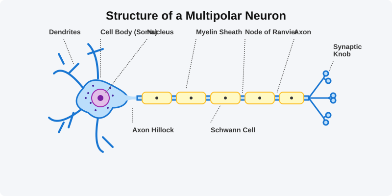
Figure 18.1: Structure of a Neuron
Generation and Conduction of Nerve Impulse
Neurons are excitable cells because their membranes are in a polarised state. Different types of ion channels are present on the neural membrane. These ion channels are selectively permeable to different ions.
- Resting Potential: When a neuron is not conducting any impulse, i.e., resting, the axonal membrane is comparatively more permeable to potassium ions ($K^+$) and nearly impermeable to sodium ions ($Na^+$). This ionic gradient is maintained by the active transport of ions by the sodium-potassium pump which transports $3 Na^+$ outwards for $2 K^+$ into the cell. As a result, the outer surface carries a positive charge while its inner surface becomes negatively charged.
- Action Potential: When a stimulus is applied, the membrane becomes freely permeable to $Na^+$. This leads to a rapid influx of $Na^+$, reversing the polarity (depolarisation). The electrical potential difference across the plasma membrane at that site is called the action potential, which is in fact termed as a nerve impulse.
Synapse
A nerve impulse is transmitted from one neuron to another through junctions called synapses. A synapse is formed by the membranes of a pre-synaptic neuron and a post-synaptic neuron, which may or may not be separated by a gap called synaptic cleft.
At a chemical synapse, when an impulse arrives at the axon terminal, it stimulates the movement of the synaptic vesicles towards the membrane where they fuse with the plasma membrane and release their neurotransmitters in the synaptic cleft. The released neurotransmitters bind to their specific receptors, present on the post-synaptic membrane.
Competency Based Questions (Previous Years & Sample Papers)
Q1. The resting membrane potential of a typical mammalian neuron is mathematically recorded as $-70 \text{ mV}$ inside relative to the outside. This electrochemical gradient is largely maintained by the electrogenic $Na^+/K^+$ ATPase pump. If a powerful neurotoxin completely binds and inhibits all $Na^+/K^+$ ATPase pumps in a neuron, calculate mathematically how an immediate single action potential event (depolarization and repolarization) will be visibly affected on an oscilloscope tracing in the millisecond timeframe. Explain what will happen to the resting potential and subsequent action potentials if the pump remains inhibited over a long period (minutes).
Answer
Immediate Single Action Potential: Mathematically and practically, an immediate single action potential will be completely unaffected and look exactly normal on the oscilloscope. Reason: A single action potential only requires an infinitely small fraction of the massive existing concentration gradients of $Na^+$ and $K^+$ to rush through the voltage-gated channels. Because the massive gradient still perfectly exists immediately after adding the toxin, the gates simply open and the ions flow normally. The $Na^+/K^+$ pump is extremely slow compared to voltage-gated channels and plays virtually no role in the millisecond duration of a single spike.
Long-Term Effect: The $Na^+/K^+$ pump’s function is purely restorative over the long term. If it is inhibited for minutes, the tiny amount of $Na^+$ that enters and $K^+$ that leaves during the natural “leakage” of the resting membrane (and during subsequent action potentials if stimulated) will never be pumped back to their proper sides. Consequently, the concentrations will slowly equilibrate. The resting potential will slowly drift from $-70 \text{ mV}$ towards $0 \text{ mV}$. Once the concentration gradients are abolished, the neuron becomes mathematically and physically incapable of generating any future action potentials, resulting in neural paralysis and death.
Q2. Multiple Sclerosis is a severe demyelinating disease where the patient’s own immune system systematically destroys the myelin sheath surrounding the axons of the Central Nervous System. Based on the bio-physics of saltatory conduction, mathematically and structurally explain why the destruction of the myelin sheath drastically slows down or completely halts the conduction of action potentials along the axon, causing severe neurological deficits.
Answer
Structure and Mathematics of Myelin: In a healthy myelinated neuron, the myelin sheath acts as a thick, powerful biological electrical insulator. It mathematically prevents ion leakage and drastically reduces the membrane capacitance. Action potentials do not travel continuously down the axon membrane; instead, voltage-gated channels are concentrated exclusively at the unmyelinated gaps called the Nodes of Ranvier. The electrical current mathematically “jumps” (saltatory conduction) extremely rapidly from node to node through the interior axonal fluid.
Pathology of Demyelination: When the myelin sheath is destroyed, two physical catastrophes occur:
- Massive Current Leakage: The extremely favorable insulating layer is gone, so the internal electrical current generated at a Node of Ranvier bleeds laterally out through the naked membrane.
- Lack of Re-amplification: Because the previously myelinated sections were specifically devoid of voltage-gated $Na^+$ channels, the naked membrane cannot regenerate or re-amplify the fading signal. Therefore, the electrical signal decays exponentially over distance just like a poorly insulated wire in saltwater. By the time the signal reaches the next node, it has fallen below the mathematical threshold voltage required to trigger the next action potential, causing the nerve impulse to literally die out and fail to reach the muscle or brain, causing the devastating symptoms of Multiple Sclerosis.
Q3. Organophosphate pesticides are lethal neurotoxins that irreversibly inhibit the enzyme Acetylcholinesterase centrally located in the synaptic cleft of neuromuscular junctions. If an unfortunate agricultural worker is heavily exposed to this pesticide, trace the specific biochemical sequence of events that occurs at their synapses. Physiologically, why does this exposure lead to violently sustained, paralyzing muscle spasms (tetanus) rather than muscle flaccidity?
Answer
Biochemical Sequence:
- A nerve impulse arrives at the synaptic knob, causing the normal exocytosis release of the neurotransmitter Acetylcholine (ACh) into the synaptic cleft.
- ACh binds perfectly to the nicotinic receptors on the post-synaptic muscle membrane, opening $Na^+$ channels, triggering an action potential, and causing the muscle fiber to contract.
- Normally, the enzyme Acetylcholinesterase (AChE) exists in the cleft specifically to immediately terminate the signal by rapidly breaking down ACh into acetate and choline, allowing the muscle to relax.
- Because the pesticide has irreversibly paralyzed AChE, the enzyme is completely broken.
Reason for Spasms: Since the ACh cannot be biochemically degraded, it permanently remains in the synaptic cleft, constantly and infinitely re-binding to the post-synaptic receptors. The post-synaptic muscle membrane is perpetually depolarized, firing endless mathematical trains of action potentials. The muscle is forced into a state of continuous, maximal, and violently sustained contraction (tetanus / spastic paralysis). The victim experiences violent convulsions and usually dies from respiratory failure as the diaphragm muscle permanently spasms and physically cannot relax to exhale.
Chapter 19: Chemical Coordination and Integration
You have already learnt that the neural system provides a point-to-point rapid coordination among organs. The neural coordination is fast but short-lived. As the nerve fibres do not innervate all cells of the body and the cellular functions need to be continuously regulated; a special kind of coordination and integration has to be provided. This function is carried out by hormones. The neural system and the endocrine system jointly coordinate and regulate the physiological functions in the body.
Endocrine Glands and Hormones
Endocrine glands lack ducts and are hence, called ductless glands. Their secretions are called hormones. The classical definition of hormone as a chemical produced by endocrine glands and released into the blood and transported to a distantly located target organ has current scientific definition as follows: Hormones are non-nutrient chemicals which act as intercellular messengers and are produced in trace amounts.
Human Endocrine System
The endocrine glands and hormone producing diffused tissues/cells located in different parts of our body constitute the endocrine system.
- Hypothalamus: The basal part of the diencephalon. It produces releasing hormones (e.g., GnRH) and inhibiting hormones (e.g., Somatostatin) that regulate the synthesis and secretion of pituitary hormones.
- Pituitary Gland: Located in a bony cavity called sella tursica. The anterior pituitary secretes Growth Hormone (GH), Prolactin, Thyroid Stimulating Hormone (TSH), ACTH, LH, and FSH. The posterior pituitary stores and releases Oxytocin and Vasopressin (ADH).
- Pineal Gland: Secretes melatonin, which regulates the 24-hour diurnal rhythm of our body (sleep-wake cycle, body temperature).
- Thyroid Gland: Secretes thyroxine ($T_4$) and triiodothyronine ($T_3$), which regulate the basal metabolic rate, and Thyrocalcitonin (TCT) which regulates blood calcium levels.
- Parathyroid Gland: Secretes Parathyroid hormone (PTH), which increases the $Ca^{2+}$ levels in the blood.
- Adrenal Gland: The adrenal medulla secretes epinephrine and norepinephrine (fight or flight hormones). The adrenal cortex secretes glucocorticoids (e.g., cortisol) and mineralocorticoids (e.g., aldosterone).
- Pancreas: A composite gland. The endocrine portion (Islets of Langerhans) secretes glucagon (from $\alpha$-cells) and insulin (from $\beta$-cells) to regulate blood glucose homeostasis.
- Gonads: Testes secrete androgens (testosterone). Ovaries secrete estrogens and progesterone.
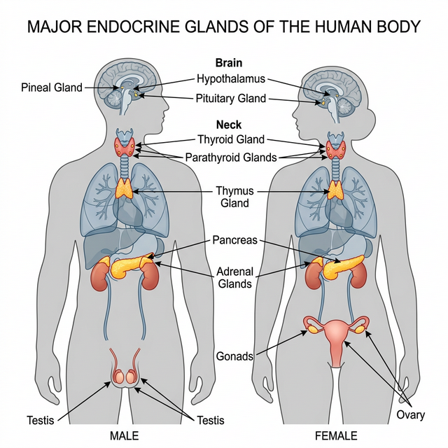
Figure 19.1: Location of major endocrine glands in the human body
Hypo- and Hyperactivity Disorders
The delicate balance of hormones is crucial. Over-secretion or under-secretion leads to severe clinical disorders.
- Dwarfism: Hyposecretion of Growth Hormone (GH) during childhood causes stunted growth.
- Acromegaly: Hypersecretion of GH in adults causes severe disfigurement, especially of the face.
- Cretinism: Hypothyroidism during pregnancy causes defective development and maturation of the growing baby leading to stunted growth (cretinism) and mental retardation.
- Goitre: Enlargement of the thyroid gland due to iodine deficiency in the diet.
- Exopthalmic Goitre (Graves’ Disease): A form of hyperthyroidism characterized by enlarged thyroid gland, protrusion of the eyeballs, and increased basal metabolic rate.
- Diabetes Mellitus: Caused by prolonged hyperglycemia due to deficiency or cellular resistance to Insulin.
- Addison’s Disease: Underproduction of hormones by the adrenal cortex alters carbohydrate metabolism causing acute weakness and fatigue.
Competency Based Questions (Previous Years & Sample Papers)
Q1. The regulation of blood glucose is tightly controlled by a negative feedback loop primarily involving the hormones Insulin and Glucagon, secreted by the Islets of Langerhans in the pancreas. Mathematically, consider normal fasting blood glucose to be set at $90 \text{ mg/dL}$. If a patient consumes a massive carbohydrate meal and their blood glucose spikes to $180 \text{ mg/dL}$, which specific cell type physically detects this mathematical error ($\Delta = +90 \text{ mg/dL}$), what hormone is immediately secreted, and what are the primary biochemical pathways activated in the liver to bring the variable back to the set-point?
Answer
Detection and Secretion: The positive mathematical deviation (hyperglycemia, $+90 \text{ mg/dL}$) is physically detected by the $\beta$-cells (beta-cells) of the Islets of Langerhans in the pancreas. In response, these cells immediately synthesize and secrete the hormone Insulin directly into the bloodstream.
Biochemical Pathways (Liver): Insulin travels to the liver (and skeletal muscles) and binds to specific tyrosine-kinase membrane receptors. This triggers a massive intracellular signaling cascade that initiates two primary biochemical pathways to reduce blood glucose:
- Glycogenesis: The rapid conversion of the excess circulating glucose into Glycogen, a highly branched, insoluble storage polysaccharide.
- Inhibition of Gluconeogenesis & Glycogenolysis: Insulin strongly inhibits the breakdown of existing glycogen and halts the de novo synthesis of new glucose from non-carbohydrate sources (amino acids/fats). By rapidly pulling glucose out of the blood and trapping it inside the liver as glycogen, the external concentration mathematically drops back towards the $90 \text{ mg/dL}$ set-point, turning off the $\beta$-cell secretion (negative feedback).
Q2. The mechanism of hormone action fundamentally differs based on the chemical nature of the hormone. Steroid hormones (like Cortisol or Estrogen) and Peptide hormones (like Insulin or Oxytocin) interact with their target cells through entirely different physical and mathematical models. Explain structurally why a steroid hormone can directly physically enter a target cell to alter gene expression, while a peptide hormone must absolutely bind to an extracellular membrane receptor, and describe the mathematical “amplification” consequence of the second messenger system used by peptide hormones.
Answer
Structural Mechanism:
- Steroid Hormones: Steroids are strictly lipid-soluble (lipophilic) molecules derived from cholesterol. Because the cell plasma membrane is a lipid bilayer, steroid hormones can freely diffuse straight through the cell membrane directly into the cytoplasm or nucleus. There, they bind to intracellular receptors to form a complex that directly binds to DNA, physically acting as a transcription factor to alter gene expression and synthesize new proteins.
- Peptide Hormones: Peptide/Protein hormones are massive, water-soluble (hydrophilic) molecules. Because they are lipophobic, they physically cannot cross the lipid bilayer. Therefore, they must act as a “first messenger” by binding exclusively to an extracellular receptor embedded on the outside surface of the target cell membrane.
Mathematical Amplification: When a single peptide hormone molecule binds to the exterior receptor, it activates a G-protein which subsequently activates an enzyme (like Adenylate Cyclase). This single enzyme physically generates thousands of “second messenger” molecules (like cyclic AMP, cAMP) inside the cell. Each cAMP molecule activates a massive cascade of protein kinases. Mathematically, this generates an enormous signal amplification cascade. A single, tiny physiological concentration of hormone ($10^{-9}$ to $10^{-12}$ Molar) mathematically results in millions of phosphorylated enzymes executing the cellular response almost instantly, making peptide hormones exceptionally potent and rapid.
Q3. The Hypothalamus is often referred to as the “Master Control Center” because it directly regulates the Pituitary Gland (the “Master Gland”). Interestingly, the hypothalamus controls the Anterior Pituitary and the Posterior Pituitary through two structurally distinct mechanisms. Describe these two separate mechanisms. For example, if a dehydrated individual needs Anti-Diuretic Hormone (ADH) to save water, exactly where is the hormone synthesized, and physically how does it reach the bloodstream?
Answer
Mechanism 1: Anterior Pituitary (Vascular Control) The hypothalamus controls the anterior pituitary entirely via a massive capillary network called the hypophyseal portal system. The hypothalamus secretes releasing or inhibiting hormones (e.g., GnRH) directly into the portal blood, which chemically travel down the stalk to mathematically stimulate or inhibit the actual endocrine cells in the anterior pituitary to synthesize and release their own distinct hormones (e.g., LH, FSH).
Mechanism 2: Posterior Pituitary (Neural Control) The posterior pituitary is not a true glandular organ; it is a direct physical, neural extension of the hypothalamus itself. The cell bodies of the neurosecretory neurons are physically located high up in the hypothalamus, where the actual hormones (ADH and Oxytocin) are synthesized.
Example of ADH: When the individual is dehydrated, osmoreceptors in the hypothalamus fire. The ADH is mathematically synthesized purely in the cell bodies within the hypothalamus. It is then physically packaged into vesicles and travels all the way down the long axons through the infundibulum stalk. The vesicles are simply stored in the synaptic knobs located in the posterior pituitary. When an action potential fires down those specific tracts, the ADH is directly exocytosed from the axon terminals into the surrounding capillaries (bloodstream). The posterior pituitary synthesizes nothing itself.